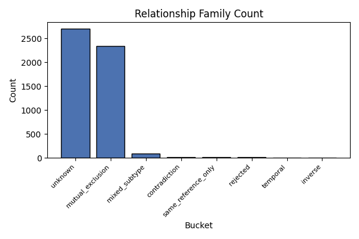
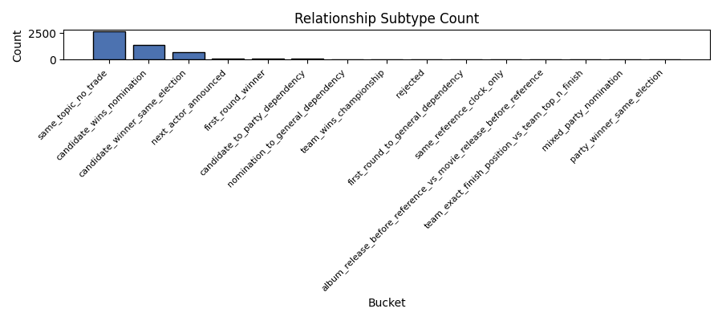
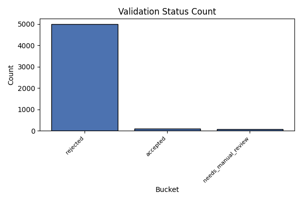
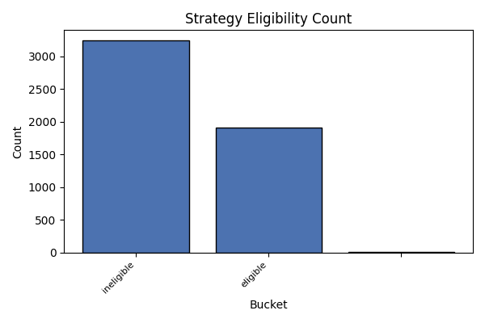
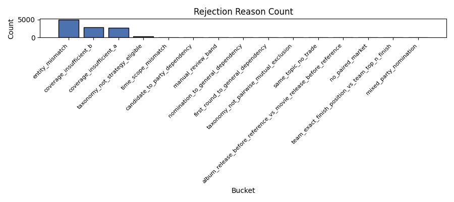
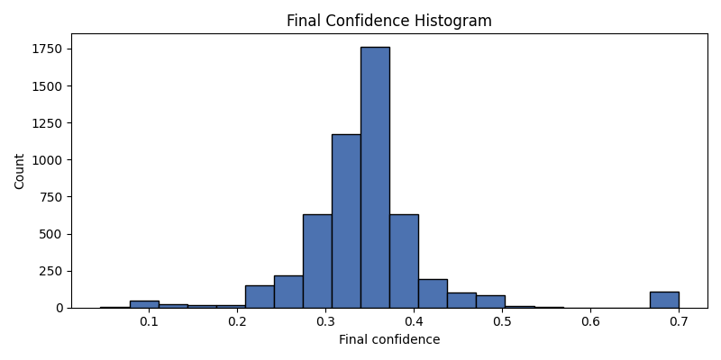

Generated: 2026-05-12T08:32:31Z






| Family | Count |
|---|---|
| unknown | 2699 |
| mutual_exclusion | 2341 |
| mixed_subtype | 84 |
| contradiction | 16 |
| same_reference_only | 13 |
| rejected | 10 |
| temporal | 2 |
| inverse | 1 |
| Subtype | Count |
|---|---|
| same_topic_no_trade | 2658 |
| candidate_wins_nomination | 1412 |
| candidate_winner_same_election | 706 |
| next_actor_announced | 105 |
| first_round_winner | 94 |
| candidate_to_party_dependency | 72 |
| nomination_to_general_dependency | 33 |
| team_wins_championship | 24 |
| rejected | 21 |
| first_round_to_general_dependency | 15 |
| same_reference_clock_only | 13 |
| album_release_before_reference_vs_movie_release_before_reference | 8 |
| team_exact_finish_position_vs_team_top_n_finish | 3 |
| mixed_party_nomination | 1 |
| party_winner_same_election | 1 |
| relationship_id | market_id_a | market_id_b | question_a | question_b | relationship_type | relationship_family | relationship_subtype | outcome_space_id | outcome_subtype_a | outcome_subtype_b | entity_type_a | entity_type_b | stage_a | stage_b | candidate_a | candidate_b | party_a | party_b | team_a | team_b | validation_status | strategy_eligibility_status | strategy_family | mixed_subtype_reason | strategy_eligible_reason | rejection_reasons_json | strategy_exclusion_reasons_json | final_confidence |
|---|---|---|---|---|---|---|---|---|---|---|---|---|---|---|---|---|---|---|---|---|---|---|---|---|---|---|---|---|
| 0bfed1102544c0b5c1004e56ae114d57 | 559664 | 559678 | Will Raphael Warnock win the 2028 Democratic presidential nomination? | Will Liz Cheney win the 2028 Democratic presidential nomination? | mutually_exclusive_category | mutual_exclusion | candidate_wins_nomination | 2028_democrats_presidential_nomination | candidate_wins_nomination | candidate_wins_nomination | candidate | candidate | nomination | nomination | Raphael Warnock | Liz Cheney | Democrats | Democrats | None | None | accepted | eligible | pairwise_mutual_exclusion | same outcome subtype/stage/scope with different options | [] | [] | 0.7 | |
| ace30584469cff3f09dd38f9eecd90a6 | 559664 | 559669 | Will Raphael Warnock win the 2028 Democratic presidential nomination? | Will Rahm Emanuel win the 2028 Democratic presidential nomination? | mutually_exclusive_category | mutual_exclusion | candidate_wins_nomination | 2028_democrats_presidential_nomination | candidate_wins_nomination | candidate_wins_nomination | candidate | candidate | nomination | nomination | Raphael Warnock | Rahm Emanuel | Democrats | Democrats | None | None | accepted | eligible | pairwise_mutual_exclusion | same outcome subtype/stage/scope with different options | [] | [] | 0.7 | |
| 564f960768d45b186a84130de4871749 | 559664 | 559683 | Will Raphael Warnock win the 2028 Democratic presidential nomination? | Will George Clooney win the 2028 Democratic presidential nomination? | mutually_exclusive_category | mutual_exclusion | candidate_wins_nomination | 2028_democrats_presidential_nomination | candidate_wins_nomination | candidate_wins_nomination | candidate | candidate | nomination | nomination | Raphael Warnock | George Clooney | Democrats | Democrats | None | None | accepted | eligible | pairwise_mutual_exclusion | same outcome subtype/stage/scope with different options | [] | [] | 0.7 | |
| ca5e0568d88d8605a101fc658242c8ad | 559664 | 559684 | Will Raphael Warnock win the 2028 Democratic presidential nomination? | Will Chelsea Clinton win the 2028 Democratic presidential nomination? | mutually_exclusive_category | mutual_exclusion | candidate_wins_nomination | 2028_democrats_presidential_nomination | candidate_wins_nomination | candidate_wins_nomination | candidate | candidate | nomination | nomination | Raphael Warnock | Chelsea Clinton | Democrats | Democrats | None | None | accepted | eligible | pairwise_mutual_exclusion | same outcome subtype/stage/scope with different options | [] | [] | 0.7 | |
| 7438ea39d26c0db70da672b8ac9a40ee | 559664 | 559686 | Will Raphael Warnock win the 2028 Democratic presidential nomination? | Will Dwayne 'The Rock' Johnson win the 2028 Democratic presidential nomination? | mutually_exclusive_category | mutual_exclusion | candidate_wins_nomination | 2028_democrats_presidential_nomination | candidate_wins_nomination | candidate_wins_nomination | candidate | candidate | nomination | nomination | Raphael Warnock | Dwayne 'The Rock' Johnson | Democrats | Democrats | None | None | accepted | eligible | pairwise_mutual_exclusion | same outcome subtype/stage/scope with different options | [] | [] | 0.7 | |
| af68d0af70b54b60f50e5393ce03a3a5 | 559664 | 559690 | Will Raphael Warnock win the 2028 Democratic presidential nomination? | Will Kim Kardashian win the 2028 Democratic presidential nomination? | mutually_exclusive_category | mutual_exclusion | candidate_wins_nomination | 2028_democrats_presidential_nomination | candidate_wins_nomination | candidate_wins_nomination | candidate | candidate | nomination | nomination | Raphael Warnock | Kim Kardashian | Democrats | Democrats | None | None | accepted | eligible | pairwise_mutual_exclusion | same outcome subtype/stage/scope with different options | [] | [] | 0.7 | |
| 0fcbe59d2ac276232bbc27a7f804b8de | 559664 | 559695 | Will Raphael Warnock win the 2028 Democratic presidential nomination? | Will James Talarico win the 2028 Democratic presidential nomination? | mutually_exclusive_category | mutual_exclusion | candidate_wins_nomination | 2028_democrats_presidential_nomination | candidate_wins_nomination | candidate_wins_nomination | candidate | candidate | nomination | nomination | Raphael Warnock | James Talarico | Democrats | Democrats | None | None | accepted | eligible | pairwise_mutual_exclusion | same outcome subtype/stage/scope with different options | [] | [] | 0.7 | |
| 859bc13ab36f7fca964f0ea61522074c | 559666 | 559692 | Will Tim Walz win the 2028 Democratic presidential nomination? | Will Jasmine Crockett win the 2028 Democratic presidential nomination? | mutually_exclusive_category | mutual_exclusion | candidate_wins_nomination | 2028_democrats_presidential_nomination | candidate_wins_nomination | candidate_wins_nomination | candidate | candidate | nomination | nomination | Tim Walz | Jasmine Crockett | Democrats | Democrats | None | None | accepted | eligible | pairwise_mutual_exclusion | same outcome subtype/stage/scope with different options | [] | [] | 0.7 | |
| 5134e660bb5820009f39cbcc77b7a862 | 559667 | 559692 | Will Michelle Obama win the 2028 Democratic presidential nomination? | Will Jasmine Crockett win the 2028 Democratic presidential nomination? | mutually_exclusive_category | mutual_exclusion | candidate_wins_nomination | 2028_democrats_presidential_nomination | candidate_wins_nomination | candidate_wins_nomination | candidate | candidate | nomination | nomination | Michelle Obama | Jasmine Crockett | Democrats | Democrats | None | None | accepted | eligible | pairwise_mutual_exclusion | same outcome subtype/stage/scope with different options | [] | [] | 0.7 | |
| 05048c6a01073b8d2448433c13af79da | 559669 | 559692 | Will Rahm Emanuel win the 2028 Democratic presidential nomination? | Will Jasmine Crockett win the 2028 Democratic presidential nomination? | mutually_exclusive_category | mutual_exclusion | candidate_wins_nomination | 2028_democrats_presidential_nomination | candidate_wins_nomination | candidate_wins_nomination | candidate | candidate | nomination | nomination | Rahm Emanuel | Jasmine Crockett | Democrats | Democrats | None | None | accepted | eligible | pairwise_mutual_exclusion | same outcome subtype/stage/scope with different options | [] | [] | 0.7 | |
| dbb06d0e3c89d56636e56b49f77fc571 | 559671 | 559692 | Will Zohran Mamdani win the 2028 Democratic presidential nomination? | Will Jasmine Crockett win the 2028 Democratic presidential nomination? | mutually_exclusive_category | mutual_exclusion | candidate_wins_nomination | 2028_democrats_presidential_nomination | candidate_wins_nomination | candidate_wins_nomination | candidate | candidate | nomination | nomination | Zohran Mamdani | Jasmine Crockett | Democrats | Democrats | None | None | accepted | eligible | pairwise_mutual_exclusion | same outcome subtype/stage/scope with different options | [] | [] | 0.7 | |
| 28151abeecb04b8cb68b4d5eab75cc1c | 559677 | 559692 | Will Hillary Clinton win the 2028 Democratic presidential nomination? | Will Jasmine Crockett win the 2028 Democratic presidential nomination? | mutually_exclusive_category | mutual_exclusion | candidate_wins_nomination | 2028_democrats_presidential_nomination | candidate_wins_nomination | candidate_wins_nomination | candidate | candidate | nomination | nomination | Hillary Clinton | Jasmine Crockett | Democrats | Democrats | None | None | accepted | eligible | pairwise_mutual_exclusion | same outcome subtype/stage/scope with different options | [] | [] | 0.7 | |
| f24596fb1ec1a83297a0862c02ff357e | 559678 | 559692 | Will Liz Cheney win the 2028 Democratic presidential nomination? | Will Jasmine Crockett win the 2028 Democratic presidential nomination? | mutually_exclusive_category | mutual_exclusion | candidate_wins_nomination | 2028_democrats_presidential_nomination | candidate_wins_nomination | candidate_wins_nomination | candidate | candidate | nomination | nomination | Liz Cheney | Jasmine Crockett | Democrats | Democrats | None | None | accepted | eligible | pairwise_mutual_exclusion | same outcome subtype/stage/scope with different options | [] | [] | 0.7 | |
| 9cbd03a0734a8d75a0b1b450e85203a4 | 559681 | 559692 | Will LeBron James win the 2028 Democratic presidential nomination? | Will Jasmine Crockett win the 2028 Democratic presidential nomination? | mutually_exclusive_category | mutual_exclusion | candidate_wins_nomination | 2028_democrats_presidential_nomination | candidate_wins_nomination | candidate_wins_nomination | candidate | candidate | nomination | nomination | LeBron James | Jasmine Crockett | Democrats | Democrats | None | None | accepted | eligible | pairwise_mutual_exclusion | same outcome subtype/stage/scope with different options | [] | [] | 0.7 | |
| b784416ed3192365346a0902d9d73c9d | 559683 | 559692 | Will George Clooney win the 2028 Democratic presidential nomination? | Will Jasmine Crockett win the 2028 Democratic presidential nomination? | mutually_exclusive_category | mutual_exclusion | candidate_wins_nomination | 2028_democrats_presidential_nomination | candidate_wins_nomination | candidate_wins_nomination | candidate | candidate | nomination | nomination | George Clooney | Jasmine Crockett | Democrats | Democrats | None | None | accepted | eligible | pairwise_mutual_exclusion | same outcome subtype/stage/scope with different options | [] | [] | 0.7 | |
| 4871e4cd6ee664e30e46190db9475530 | 559684 | 559692 | Will Chelsea Clinton win the 2028 Democratic presidential nomination? | Will Jasmine Crockett win the 2028 Democratic presidential nomination? | mutually_exclusive_category | mutual_exclusion | candidate_wins_nomination | 2028_democrats_presidential_nomination | candidate_wins_nomination | candidate_wins_nomination | candidate | candidate | nomination | nomination | Chelsea Clinton | Jasmine Crockett | Democrats | Democrats | None | None | accepted | eligible | pairwise_mutual_exclusion | same outcome subtype/stage/scope with different options | [] | [] | 0.7 | |
| eadd61d12be09cbdd90fc72eaef32a08 | 559686 | 559692 | Will Dwayne 'The Rock' Johnson win the 2028 Democratic presidential nomination? | Will Jasmine Crockett win the 2028 Democratic presidential nomination? | mutually_exclusive_category | mutual_exclusion | candidate_wins_nomination | 2028_democrats_presidential_nomination | candidate_wins_nomination | candidate_wins_nomination | candidate | candidate | nomination | nomination | Dwayne 'The Rock' Johnson | Jasmine Crockett | Democrats | Democrats | None | None | accepted | eligible | pairwise_mutual_exclusion | same outcome subtype/stage/scope with different options | [] | [] | 0.7 | |
| 2001a82f88ffc8b2313b1fcdde2dec9c | 559690 | 559692 | Will Kim Kardashian win the 2028 Democratic presidential nomination? | Will Jasmine Crockett win the 2028 Democratic presidential nomination? | mutually_exclusive_category | mutual_exclusion | candidate_wins_nomination | 2028_democrats_presidential_nomination | candidate_wins_nomination | candidate_wins_nomination | candidate | candidate | nomination | nomination | Kim Kardashian | Jasmine Crockett | Democrats | Democrats | None | None | accepted | eligible | pairwise_mutual_exclusion | same outcome subtype/stage/scope with different options | [] | [] | 0.7 | |
| 9faaaf2f86fa9f07f52ab0d8104958bc | 559692 | 559695 | Will Jasmine Crockett win the 2028 Democratic presidential nomination? | Will James Talarico win the 2028 Democratic presidential nomination? | mutually_exclusive_category | mutual_exclusion | candidate_wins_nomination | 2028_democrats_presidential_nomination | candidate_wins_nomination | candidate_wins_nomination | candidate | candidate | nomination | nomination | Jasmine Crockett | James Talarico | Democrats | Democrats | None | None | accepted | eligible | pairwise_mutual_exclusion | same outcome subtype/stage/scope with different options | [] | [] | 0.7 | |
| bafa9186cf31c7b689dd1a21d6ad0ca7 | 561229 | 561251 | Will JD Vance win the 2028 US Presidential Election? | Will LeBron James win the 2028 US Presidential Election? | mutually_exclusive_category | mutual_exclusion | candidate_winner_same_election | 2028_us_presidential_election_candidate_winner | candidate_winner_same_election | candidate_winner_same_election | candidate | candidate | general_election | general_election | JD Vance | LeBron James | None | None | None | None | accepted | eligible | pairwise_mutual_exclusion | same outcome subtype/stage/scope with different options | [] | [] | 0.7 | |
| 650e8994dc7fe89d6e5b2002a4067ecf | 561230 | 561251 | Will Gavin Newsom win the 2028 US Presidential Election? | Will LeBron James win the 2028 US Presidential Election? | mutually_exclusive_category | mutual_exclusion | candidate_winner_same_election | 2028_us_presidential_election_candidate_winner | candidate_winner_same_election | candidate_winner_same_election | candidate | candidate | general_election | general_election | Gavin Newsom | LeBron James | None | None | None | None | accepted | eligible | pairwise_mutual_exclusion | same outcome subtype/stage/scope with different options | [] | [] | 0.7 | |
| 5dacef314ca1a59a7c76808cdfe90651 | 561231 | 561251 | Will Alexandria Ocasio-Cortez win the 2028 US Presidential Election? | Will LeBron James win the 2028 US Presidential Election? | mutually_exclusive_category | mutual_exclusion | candidate_winner_same_election | 2028_us_presidential_election_candidate_winner | candidate_winner_same_election | candidate_winner_same_election | candidate | candidate | general_election | general_election | Alexandria Ocasio-Cortez | LeBron James | None | None | None | None | accepted | eligible | pairwise_mutual_exclusion | same outcome subtype/stage/scope with different options | [] | [] | 0.7 | |
| 9fd4f914809585de3830a93d6968c20b | 561232 | 561251 | Will Pete Buttigieg win the 2028 US Presidential Election? | Will LeBron James win the 2028 US Presidential Election? | mutually_exclusive_category | mutual_exclusion | candidate_winner_same_election | 2028_us_presidential_election_candidate_winner | candidate_winner_same_election | candidate_winner_same_election | candidate | candidate | general_election | general_election | Pete Buttigieg | LeBron James | None | None | None | None | accepted | eligible | pairwise_mutual_exclusion | same outcome subtype/stage/scope with different options | [] | [] | 0.7 | |
| 50f458ffd06ca3625e89fc3a3c90514b | 561233 | 561251 | Will Josh Shapiro win the 2028 US Presidential Election? | Will LeBron James win the 2028 US Presidential Election? | mutually_exclusive_category | mutual_exclusion | candidate_winner_same_election | 2028_us_presidential_election_candidate_winner | candidate_winner_same_election | candidate_winner_same_election | candidate | candidate | general_election | general_election | Josh Shapiro | LeBron James | None | None | None | None | accepted | eligible | pairwise_mutual_exclusion | same outcome subtype/stage/scope with different options | [] | [] | 0.7 | |
| a53d065bc5412fcee3bd8c731f3de911 | 561234 | 561251 | Will Marco Rubio win the 2028 US Presidential Election? | Will LeBron James win the 2028 US Presidential Election? | mutually_exclusive_category | mutual_exclusion | candidate_winner_same_election | 2028_us_presidential_election_candidate_winner | candidate_winner_same_election | candidate_winner_same_election | candidate | candidate | general_election | general_election | Marco Rubio | LeBron James | None | None | None | None | accepted | eligible | pairwise_mutual_exclusion | same outcome subtype/stage/scope with different options | [] | [] | 0.7 | |
| 052292ad6f81d1a7c296d2df4fb09343 | 561238 | 561251 | Will Glenn Youngkin win the 2028 US Presidential Election? | Will LeBron James win the 2028 US Presidential Election? | mutually_exclusive_category | mutual_exclusion | candidate_winner_same_election | 2028_us_presidential_election_candidate_winner | candidate_winner_same_election | candidate_winner_same_election | candidate | candidate | general_election | general_election | Glenn Youngkin | LeBron James | None | None | None | None | accepted | eligible | pairwise_mutual_exclusion | same outcome subtype/stage/scope with different options | [] | [] | 0.7 | |
| da3636d4f58fda530cdb0757e05669aa | 561239 | 561251 | Will Kamala Harris win the 2028 US Presidential Election? | Will LeBron James win the 2028 US Presidential Election? | mutually_exclusive_category | mutual_exclusion | candidate_winner_same_election | 2028_us_presidential_election_candidate_winner | candidate_winner_same_election | candidate_winner_same_election | candidate | candidate | general_election | general_election | Kamala Harris | LeBron James | None | None | None | None | accepted | eligible | pairwise_mutual_exclusion | same outcome subtype/stage/scope with different options | [] | [] | 0.7 | |
| de90120a8d591983a1617bd1111c7e06 | 559664 | 559681 | Will Raphael Warnock win the 2028 Democratic presidential nomination? | Will LeBron James win the 2028 Democratic presidential nomination? | mutually_exclusive_category | mutual_exclusion | candidate_wins_nomination | 2028_democrats_presidential_nomination | candidate_wins_nomination | candidate_wins_nomination | candidate | candidate | nomination | nomination | Raphael Warnock | LeBron James | Democrats | Democrats | None | None | accepted | eligible | pairwise_mutual_exclusion | same outcome subtype/stage/scope with different options | [] | [] | 0.7 | |
| 1aefabf4228fe797ec77e4ac83a57065 | 561241 | 561251 | Will JB Pritzker win the 2028 US Presidential Election? | Will LeBron James win the 2028 US Presidential Election? | mutually_exclusive_category | mutual_exclusion | candidate_winner_same_election | 2028_us_presidential_election_candidate_winner | candidate_winner_same_election | candidate_winner_same_election | candidate | candidate | general_election | general_election | JB Pritzker | LeBron James | None | None | None | None | accepted | eligible | pairwise_mutual_exclusion | same outcome subtype/stage/scope with different options | [] | [] | 0.7 | |
| 73b568d11158e53faec8caf0e2cdf55a | 561242 | 561251 | Will Tulsi Gabbard win the 2028 US Presidential Election? | Will LeBron James win the 2028 US Presidential Election? | mutually_exclusive_category | mutual_exclusion | candidate_winner_same_election | 2028_us_presidential_election_candidate_winner | candidate_winner_same_election | candidate_winner_same_election | candidate | candidate | general_election | general_election | Tulsi Gabbard | LeBron James | None | None | None | None | accepted | eligible | pairwise_mutual_exclusion | same outcome subtype/stage/scope with different options | [] | [] | 0.7 |
| relationship_id | market_id_a | market_id_b | question_a | question_b | relationship_type | relationship_family | relationship_subtype | outcome_space_id | outcome_subtype_a | outcome_subtype_b | entity_type_a | entity_type_b | stage_a | stage_b | candidate_a | candidate_b | party_a | party_b | team_a | team_b | validation_status | strategy_eligibility_status | strategy_family | mixed_subtype_reason | strategy_eligible_reason | rejection_reasons_json | strategy_exclusion_reasons_json | final_confidence |
|---|---|---|---|---|---|---|---|---|---|---|---|---|---|---|---|---|---|---|---|---|---|---|---|---|---|---|---|---|
| 18fb149ec147379b34dea643cb9f5222 | 561251 | 565064 | Will LeBron James win the 2028 US Presidential Election? | Will the Republicans win the 2028 US Presidential Election? | mixed_subtype | mixed_subtype | candidate_to_party_dependency | 2028_us_presidential_election | candidate_winner_same_election | party_winner_same_election | candidate | party | general_election | general_election | LeBron James | Republicans | None | Republicans | None | None | rejected | ineligible | none | candidate market and party market share a broad election space | not strategy eligible by default | [{"code": "candidate_to_party_dependency", "detail": "candidate market and party market share a broad election space"}] | [{"code": "taxonomy_not_pairwise_mutual_exclusion", "detail": "not strategy eligible by default"}] | 0.7000 |
| f5f3dd0e7bd76afdd722395e9500eda0 | 561251 | 565065 | Will LeBron James win the 2028 US Presidential Election? | Will the Democrats win the 2028 US Presidential Election? | mixed_subtype | mixed_subtype | candidate_to_party_dependency | 2028_us_presidential_election | candidate_winner_same_election | party_winner_same_election | candidate | party | general_election | general_election | LeBron James | Democrats | None | Democrats | None | None | rejected | ineligible | none | candidate market and party market share a broad election space | not strategy eligible by default | [{"code": "candidate_to_party_dependency", "detail": "candidate market and party market share a broad election space"}] | [{"code": "taxonomy_not_pairwise_mutual_exclusion", "detail": "not strategy eligible by default"}] | 0.7000 |
| cc376429463d78167ad174e43317b2d3 | 559690 | 562003 | Will Kim Kardashian win the 2028 Democratic presidential nomination? | Will Kim Kardashian win the 2028 Republican presidential nomination? | rejected | mixed_subtype | mixed_party_nomination | 2028_democrats_presidential_nomination | candidate_wins_nomination | candidate_wins_nomination | candidate | candidate | nomination | nomination | None | None | Democrats | Republicans | None | None | needs_manual_review | ineligible | none | same person appears in nomination markets for different parties | not strategy eligible by default | [{"code": "mixed_party_nomination", "detail": "same person appears in nomination markets for different parties"}] | [{"code": "taxonomy_not_strategy_eligible", "detail": "not strategy eligible by default"}] | 0.5283 |
| 05ae0794a6a689f86dd1441ff2df26ec | 572765 | 582134 | Will Liverpool finish in 3rd place in the 2025-26 English Premier League? | Will Liverpool finish in the top 4 of the EPL 2025–26 standings? | rejected | mixed_subtype | team_exact_finish_position_vs_team_top_n_finish | premier_league_finish_position | team_exact_finish_position | team_top_n_finish | team | team | league_finish | league_finish | None | None | None | None | None | None | rejected | ineligible | none | same broad outcome space but different outcome subtypes | not strategy eligible by default | [{"code": "team_exact_finish_position_vs_team_top_n_finish", "detail": "same broad outcome space but different outcome subtypes"}] | [{"code": "coverage_insufficient_a", "detail": "market_a coverage_score=0.15"}, {"code": "coverage_insufficient_b", "detail": "market_b coverage_score=0.15"}] | 0.4653 |
| 4d8e3f1dfa6859ea0a922dd6e3d3c163 | 572770 | 582138 | Will Manchester United finish in 3rd place in the 2025-26 English Premier League? | Will Manchester United finish in the top 4 of the EPL 2025–26 standings? | rejected | mixed_subtype | team_exact_finish_position_vs_team_top_n_finish | premier_league_finish_position | team_exact_finish_position | team_top_n_finish | team | team | league_finish | league_finish | None | None | None | None | None | None | rejected | ineligible | none | same broad outcome space but different outcome subtypes | not strategy eligible by default | [{"code": "team_exact_finish_position_vs_team_top_n_finish", "detail": "same broad outcome space but different outcome subtypes"}] | [{"code": "coverage_insufficient_a", "detail": "market_a coverage_score=0.15"}, {"code": "coverage_insufficient_b", "detail": "market_b coverage_score=0.15"}] | 0.4114 |
| 866a3f7cda29a5d81f552e8d3bf9ee2e | 572772 | 582139 | Will Aston Villa finish in 3rd place in the 2025-26 English Premier League? | Will Aston Villa finish in the top 4 of the EPL 2025–26 standings? | rejected | mixed_subtype | team_exact_finish_position_vs_team_top_n_finish | premier_league_finish_position | team_exact_finish_position | team_top_n_finish | team | team | league_finish | league_finish | None | None | None | None | None | None | rejected | ineligible | none | same broad outcome space but different outcome subtypes | not strategy eligible by default | [{"code": "entity_mismatch", "detail": "entity_overlap=0.400 < 0.5"}, {"code": "team_exact_finish_position_vs_team_top_n_finish", "detail": "same broad outcome space but different outcome subtypes"}] | [{"code": "coverage_insufficient_a", "detail": "market_a coverage_score=0.15"}, {"code": "coverage_insufficient_b", "detail": "market_b coverage_score=0.15"}] | 0.3900 |
| 351d1fdb96c8437bcc50c9efdc849634 | 561239 | 565064 | Will Kamala Harris win the 2028 US Presidential Election? | Will the Republicans win the 2028 US Presidential Election? | rejected | mixed_subtype | candidate_to_party_dependency | 2028_us_presidential_election | candidate_winner_same_election | party_winner_same_election | candidate | party | general_election | general_election | None | None | None | Republicans | None | None | rejected | ineligible | none | candidate market and party market share a broad election space | not strategy eligible by default | [{"code": "entity_mismatch", "detail": "entity_overlap=0.100 < 0.5"}, {"code": "candidate_to_party_dependency", "detail": "candidate market and party market share a broad election space"}] | [{"code": "taxonomy_not_strategy_eligible", "detail": "not strategy eligible by default"}] | 0.3057 |
| 0462c7c0d38ac054df91da25b1e186e1 | 540817 | 540820 | New Rihanna Album before GTA VI? | Trump out as President before GTA VI? | rejected | mixed_subtype | album_release_before_reference_vs_movie_release_before_reference | gta_vi_reference_clock | album_release_before_reference | movie_release_before_reference | event | event | temporal | temporal | None | None | None | None | None | None | rejected | ineligible | none | same broad outcome space but different outcome subtypes | not strategy eligible by default | [{"code": "entity_mismatch", "detail": "entity_overlap=0.333 < 0.5"}, {"code": "album_release_before_reference_vs_movie_release_before_reference", "detail": "same broad outcome space but different outcome subtypes"}] | [{"code": "taxonomy_not_strategy_eligible", "detail": "not strategy eligible by default"}] | 0.3024 |
| cf16259291f23bb8c092833634ff60b6 | 561246 | 565064 | Will Ron DeSantis win the 2028 US Presidential Election? | Will the Republicans win the 2028 US Presidential Election? | rejected | mixed_subtype | candidate_to_party_dependency | 2028_us_presidential_election | candidate_winner_same_election | party_winner_same_election | candidate | party | general_election | general_election | None | None | None | Republicans | None | None | rejected | ineligible | none | candidate market and party market share a broad election space | not strategy eligible by default | [{"code": "entity_mismatch", "detail": "entity_overlap=0.100 < 0.5"}, {"code": "candidate_to_party_dependency", "detail": "candidate market and party market share a broad election space"}] | [{"code": "taxonomy_not_strategy_eligible", "detail": "not strategy eligible by default"}] | 0.2918 |
| b7af699c4c25cda7c7c5b16ee302e7fb | 561245 | 565064 | Will Nikki Haley win the 2028 US Presidential Election? | Will the Republicans win the 2028 US Presidential Election? | rejected | mixed_subtype | candidate_to_party_dependency | 2028_us_presidential_election | candidate_winner_same_election | party_winner_same_election | candidate | party | general_election | general_election | None | None | None | Republicans | None | None | rejected | ineligible | none | candidate market and party market share a broad election space | not strategy eligible by default | [{"code": "entity_mismatch", "detail": "entity_overlap=0.100 < 0.5"}, {"code": "candidate_to_party_dependency", "detail": "candidate market and party market share a broad election space"}] | [{"code": "taxonomy_not_strategy_eligible", "detail": "not strategy eligible by default"}] | 0.2884 |
| 9d5e6da736426316f2d7b4d67325f2ae | 561236 | 565064 | Will Gretchen Whitmer win the 2028 US Presidential Election? | Will the Republicans win the 2028 US Presidential Election? | rejected | mixed_subtype | candidate_to_party_dependency | 2028_us_presidential_election | candidate_winner_same_election | party_winner_same_election | candidate | party | general_election | general_election | None | None | None | Republicans | None | None | rejected | ineligible | none | candidate market and party market share a broad election space | not strategy eligible by default | [{"code": "entity_mismatch", "detail": "entity_overlap=0.100 < 0.5"}, {"code": "candidate_to_party_dependency", "detail": "candidate market and party market share a broad election space"}] | [{"code": "taxonomy_not_strategy_eligible", "detail": "not strategy eligible by default"}] | 0.2832 |
| 8c54d9a10d5386ce5266acdd320cf56a | 561234 | 565064 | Will Marco Rubio win the 2028 US Presidential Election? | Will the Republicans win the 2028 US Presidential Election? | rejected | mixed_subtype | candidate_to_party_dependency | 2028_us_presidential_election | candidate_winner_same_election | party_winner_same_election | candidate | party | general_election | general_election | None | None | None | Republicans | None | None | rejected | ineligible | none | candidate market and party market share a broad election space | not strategy eligible by default | [{"code": "entity_mismatch", "detail": "entity_overlap=0.100 < 0.5"}, {"code": "candidate_to_party_dependency", "detail": "candidate market and party market share a broad election space"}] | [{"code": "taxonomy_not_strategy_eligible", "detail": "not strategy eligible by default"}] | 0.2829 |
| 2d25494e96480450e77183ad9b2454a9 | 561248 | 565064 | Will Vivek Ramaswamy win the 2028 US Presidential Election? | Will the Republicans win the 2028 US Presidential Election? | rejected | mixed_subtype | candidate_to_party_dependency | 2028_us_presidential_election | candidate_winner_same_election | party_winner_same_election | candidate | party | general_election | general_election | None | None | None | Republicans | None | None | rejected | ineligible | none | candidate market and party market share a broad election space | not strategy eligible by default | [{"code": "entity_mismatch", "detail": "entity_overlap=0.100 < 0.5"}, {"code": "candidate_to_party_dependency", "detail": "candidate market and party market share a broad election space"}] | [{"code": "taxonomy_not_strategy_eligible", "detail": "not strategy eligible by default"}] | 0.2822 |
| 3e724fd557311a758d2ff30d51f096d4 | 561257 | 565064 | Will Michelle Obama win the 2028 US Presidential Election? | Will the Republicans win the 2028 US Presidential Election? | rejected | mixed_subtype | candidate_to_party_dependency | 2028_us_presidential_election | candidate_winner_same_election | party_winner_same_election | candidate | party | general_election | general_election | None | None | None | Republicans | None | None | rejected | ineligible | none | candidate market and party market share a broad election space | not strategy eligible by default | [{"code": "entity_mismatch", "detail": "entity_overlap=0.100 < 0.5"}, {"code": "candidate_to_party_dependency", "detail": "candidate market and party market share a broad election space"}] | [{"code": "taxonomy_not_strategy_eligible", "detail": "not strategy eligible by default"}] | 0.2819 |
| 0c2bbb1172ebad2c914731d5b11944f4 | 561262 | 565064 | Will James Talarico win the 2028 US Presidential Election? | Will the Republicans win the 2028 US Presidential Election? | rejected | mixed_subtype | candidate_to_party_dependency | 2028_us_presidential_election | candidate_winner_same_election | party_winner_same_election | candidate | party | general_election | general_election | None | None | None | Republicans | None | None | rejected | ineligible | none | candidate market and party market share a broad election space | not strategy eligible by default | [{"code": "entity_mismatch", "detail": "entity_overlap=0.100 < 0.5"}, {"code": "candidate_to_party_dependency", "detail": "candidate market and party market share a broad election space"}] | [{"code": "taxonomy_not_strategy_eligible", "detail": "not strategy eligible by default"}] | 0.2800 |
| e3c8cb56e29404983d6aa0a3514460ff | 561247 | 565064 | Will Tim Walz win the 2028 US Presidential Election? | Will the Republicans win the 2028 US Presidential Election? | rejected | mixed_subtype | candidate_to_party_dependency | 2028_us_presidential_election | candidate_winner_same_election | party_winner_same_election | candidate | party | general_election | general_election | None | None | None | Republicans | None | None | rejected | ineligible | none | candidate market and party market share a broad election space | not strategy eligible by default | [{"code": "entity_mismatch", "detail": "entity_overlap=0.100 < 0.5"}, {"code": "candidate_to_party_dependency", "detail": "candidate market and party market share a broad election space"}] | [{"code": "taxonomy_not_strategy_eligible", "detail": "not strategy eligible by default"}] | 0.2795 |
| e95b6dcecc0de2e23c0043829de0c4c2 | 561258 | 565064 | Will Jamie Dimon win the 2028 US Presidential Election? | Will the Republicans win the 2028 US Presidential Election? | rejected | mixed_subtype | candidate_to_party_dependency | 2028_us_presidential_election | candidate_winner_same_election | party_winner_same_election | candidate | party | general_election | general_election | None | None | None | Republicans | None | None | rejected | ineligible | none | candidate market and party market share a broad election space | not strategy eligible by default | [{"code": "entity_mismatch", "detail": "entity_overlap=0.100 < 0.5"}, {"code": "candidate_to_party_dependency", "detail": "candidate market and party market share a broad election space"}] | [{"code": "taxonomy_not_strategy_eligible", "detail": "not strategy eligible by default"}] | 0.2785 |
| f2882bb64692933a9e7adb47e2ad9452 | 561241 | 565064 | Will JB Pritzker win the 2028 US Presidential Election? | Will the Republicans win the 2028 US Presidential Election? | rejected | mixed_subtype | candidate_to_party_dependency | 2028_us_presidential_election | candidate_winner_same_election | party_winner_same_election | candidate | party | general_election | general_election | None | None | None | Republicans | None | None | rejected | ineligible | none | candidate market and party market share a broad election space | not strategy eligible by default | [{"code": "entity_mismatch", "detail": "entity_overlap=0.100 < 0.5"}, {"code": "candidate_to_party_dependency", "detail": "candidate market and party market share a broad election space"}] | [{"code": "taxonomy_not_strategy_eligible", "detail": "not strategy eligible by default"}] | 0.2779 |
| 06eb8de3f348578d5212ece1f4fce7df | 540818 | 573647 | New Playboi Carti Album before GTA VI? | Will GPT-6 be released before GTA VI? | rejected | mixed_subtype | album_release_before_reference_vs_movie_release_before_reference | gta_vi_reference_clock | album_release_before_reference | movie_release_before_reference | event | event | temporal | temporal | None | None | None | None | None | None | rejected | ineligible | none | same broad outcome space but different outcome subtypes | not strategy eligible by default | [{"code": "entity_mismatch", "detail": "entity_overlap=0.100 < 0.5"}, {"code": "album_release_before_reference_vs_movie_release_before_reference", "detail": "same broad outcome space but different outcome subtypes"}] | [{"code": "coverage_insufficient_b", "detail": "market_b coverage_score=0.54"}] | 0.2771 |
| e916b1eed9b2b3dca25064c383a4cb55 | 561244 | 565064 | Will Donald Trump Jr. win the 2028 US Presidential Election? | Will the Republicans win the 2028 US Presidential Election? | rejected | mixed_subtype | candidate_to_party_dependency | 2028_us_presidential_election | candidate_winner_same_election | party_winner_same_election | candidate | party | general_election | general_election | None | None | None | Republicans | None | None | rejected | ineligible | none | candidate market and party market share a broad election space | not strategy eligible by default | [{"code": "entity_mismatch", "detail": "entity_overlap=0.100 < 0.5"}, {"code": "candidate_to_party_dependency", "detail": "candidate market and party market share a broad election space"}] | [{"code": "taxonomy_not_strategy_eligible", "detail": "not strategy eligible by default"}] | 0.2765 |
| 0588919fb5757ba381b2acd9e49a13ac | 561263 | 565064 | Will Eric Trump win the 2028 US Presidential Election? | Will the Republicans win the 2028 US Presidential Election? | rejected | mixed_subtype | candidate_to_party_dependency | 2028_us_presidential_election | candidate_winner_same_election | party_winner_same_election | candidate | party | general_election | general_election | None | None | None | Republicans | None | None | rejected | ineligible | none | candidate market and party market share a broad election space | not strategy eligible by default | [{"code": "entity_mismatch", "detail": "entity_overlap=0.100 < 0.5"}, {"code": "candidate_to_party_dependency", "detail": "candidate market and party market share a broad election space"}] | [{"code": "coverage_insufficient_a", "detail": "market_a coverage_score=0.51"}] | 0.2756 |
| 8daf151f9737c385edbd72f358471e90 | 561243 | 565064 | Will Donald Trump win the 2028 US Presidential Election? | Will the Republicans win the 2028 US Presidential Election? | rejected | mixed_subtype | candidate_to_party_dependency | 2028_us_presidential_election | candidate_winner_same_election | party_winner_same_election | candidate | party | general_election | general_election | None | None | None | Republicans | None | None | rejected | ineligible | none | candidate market and party market share a broad election space | not strategy eligible by default | [{"code": "entity_mismatch", "detail": "entity_overlap=0.100 < 0.5"}, {"code": "candidate_to_party_dependency", "detail": "candidate market and party market share a broad election space"}] | [{"code": "taxonomy_not_strategy_eligible", "detail": "not strategy eligible by default"}] | 0.2756 |
| 74619b48e9320daafede268066cda94a | 561252 | 565064 | Will Dwayne 'The Rock' Johnson win the 2028 US Presidential Election? | Will the Republicans win the 2028 US Presidential Election? | rejected | mixed_subtype | candidate_to_party_dependency | 2028_us_presidential_election | candidate_winner_same_election | party_winner_same_election | candidate | party | general_election | general_election | None | None | None | Republicans | None | None | rejected | ineligible | none | candidate market and party market share a broad election space | not strategy eligible by default | [{"code": "entity_mismatch", "detail": "entity_overlap=0.100 < 0.5"}, {"code": "candidate_to_party_dependency", "detail": "candidate market and party market share a broad election space"}] | [{"code": "taxonomy_not_strategy_eligible", "detail": "not strategy eligible by default"}] | 0.2756 |
| 73c04070ff490857838b43f3a1787f6b | 561255 | 565064 | Will Ivanka Trump win the 2028 US Presidential Election? | Will the Republicans win the 2028 US Presidential Election? | rejected | mixed_subtype | candidate_to_party_dependency | 2028_us_presidential_election | candidate_winner_same_election | party_winner_same_election | candidate | party | general_election | general_election | None | None | None | Republicans | None | None | rejected | ineligible | none | candidate market and party market share a broad election space | not strategy eligible by default | [{"code": "entity_mismatch", "detail": "entity_overlap=0.100 < 0.5"}, {"code": "candidate_to_party_dependency", "detail": "candidate market and party market share a broad election space"}] | [{"code": "taxonomy_not_strategy_eligible", "detail": "not strategy eligible by default"}] | 0.2756 |
| 0bdd77d3e422f310da192706152eb3c6 | 561259 | 565064 | Will Ro Khanna win the 2028 US Presidential Election? | Will the Republicans win the 2028 US Presidential Election? | rejected | mixed_subtype | candidate_to_party_dependency | 2028_us_presidential_election | candidate_winner_same_election | party_winner_same_election | candidate | party | general_election | general_election | None | None | None | Republicans | None | None | rejected | ineligible | none | candidate market and party market share a broad election space | not strategy eligible by default | [{"code": "entity_mismatch", "detail": "entity_overlap=0.100 < 0.5"}, {"code": "candidate_to_party_dependency", "detail": "candidate market and party market share a broad election space"}] | [{"code": "taxonomy_not_strategy_eligible", "detail": "not strategy eligible by default"}] | 0.2750 |
| 9f2893717414b1728b2ee69dbc0da2fa | 561250 | 565064 | Will Elon Musk win the 2028 US Presidential Election? | Will the Republicans win the 2028 US Presidential Election? | rejected | mixed_subtype | candidate_to_party_dependency | 2028_us_presidential_election | candidate_winner_same_election | party_winner_same_election | candidate | party | general_election | general_election | None | None | None | Republicans | None | None | rejected | ineligible | none | candidate market and party market share a broad election space | not strategy eligible by default | [{"code": "entity_mismatch", "detail": "entity_overlap=0.100 < 0.5"}, {"code": "candidate_to_party_dependency", "detail": "candidate market and party market share a broad election space"}] | [{"code": "taxonomy_not_strategy_eligible", "detail": "not strategy eligible by default"}] | 0.2750 |
| d35f569ac408a0ba9f40f9907354980f | 561229 | 565064 | Will JD Vance win the 2028 US Presidential Election? | Will the Republicans win the 2028 US Presidential Election? | rejected | mixed_subtype | candidate_to_party_dependency | 2028_us_presidential_election | candidate_winner_same_election | party_winner_same_election | candidate | party | general_election | general_election | None | None | None | Republicans | None | None | rejected | ineligible | none | candidate market and party market share a broad election space | not strategy eligible by default | [{"code": "entity_mismatch", "detail": "entity_overlap=0.100 < 0.5"}, {"code": "candidate_to_party_dependency", "detail": "candidate market and party market share a broad election space"}] | [{"code": "taxonomy_not_strategy_eligible", "detail": "not strategy eligible by default"}] | 0.2745 |
| fbd613ce2942adb17aa0e7940d02c2d1 | 561235 | 565064 | Will Wes Moore win the 2028 US Presidential Election? | Will the Republicans win the 2028 US Presidential Election? | rejected | mixed_subtype | candidate_to_party_dependency | 2028_us_presidential_election | candidate_winner_same_election | party_winner_same_election | candidate | party | general_election | general_election | None | None | None | Republicans | None | None | rejected | ineligible | none | candidate market and party market share a broad election space | not strategy eligible by default | [{"code": "entity_mismatch", "detail": "entity_overlap=0.100 < 0.5"}, {"code": "candidate_to_party_dependency", "detail": "candidate market and party market share a broad election space"}] | [{"code": "taxonomy_not_strategy_eligible", "detail": "not strategy eligible by default"}] | 0.2733 |
| ab29c3a650ebac63be8170393c149aec | 561261 | 565064 | Will Jon Ossoff win the 2028 US Presidential Election? | Will the Republicans win the 2028 US Presidential Election? | rejected | mixed_subtype | candidate_to_party_dependency | 2028_us_presidential_election | candidate_winner_same_election | party_winner_same_election | candidate | party | general_election | general_election | None | None | None | Republicans | None | None | rejected | ineligible | none | candidate market and party market share a broad election space | not strategy eligible by default | [{"code": "entity_mismatch", "detail": "entity_overlap=0.100 < 0.5"}, {"code": "candidate_to_party_dependency", "detail": "candidate market and party market share a broad election space"}] | [{"code": "taxonomy_not_strategy_eligible", "detail": "not strategy eligible by default"}] | 0.2733 |
| 3ab9645d3305aa7753a43e4712fec8e6 | 561260 | 565064 | Will Thomas Massie win the 2028 US Presidential Election? | Will the Republicans win the 2028 US Presidential Election? | rejected | mixed_subtype | candidate_to_party_dependency | 2028_us_presidential_election | candidate_winner_same_election | party_winner_same_election | candidate | party | general_election | general_election | None | None | None | Republicans | None | None | rejected | ineligible | none | candidate market and party market share a broad election space | not strategy eligible by default | [{"code": "entity_mismatch", "detail": "entity_overlap=0.100 < 0.5"}, {"code": "candidate_to_party_dependency", "detail": "candidate market and party market share a broad election space"}] | [{"code": "taxonomy_not_strategy_eligible", "detail": "not strategy eligible by default"}] | 0.2731 |
| relationship_id | market_id_a | market_id_b | question_a | question_b | relationship_type | relationship_family | relationship_subtype | outcome_space_id | outcome_subtype_a | outcome_subtype_b | entity_type_a | entity_type_b | stage_a | stage_b | candidate_a | candidate_b | party_a | party_b | team_a | team_b | validation_status | strategy_eligibility_status | strategy_family | mixed_subtype_reason | strategy_eligible_reason | rejection_reasons_json | strategy_exclusion_reasons_json | final_confidence |
|---|---|---|---|---|---|---|---|---|---|---|---|---|---|---|---|---|---|---|---|---|---|---|---|---|---|---|---|---|
| 18fb149ec147379b34dea643cb9f5222 | 561251 | 565064 | Will LeBron James win the 2028 US Presidential Election? | Will the Republicans win the 2028 US Presidential Election? | mixed_subtype | mixed_subtype | candidate_to_party_dependency | 2028_us_presidential_election | candidate_winner_same_election | party_winner_same_election | candidate | party | general_election | general_election | LeBron James | Republicans | None | Republicans | None | None | rejected | ineligible | none | candidate market and party market share a broad election space | not strategy eligible by default | [{"code": "candidate_to_party_dependency", "detail": "candidate market and party market share a broad election space"}] | [{"code": "taxonomy_not_pairwise_mutual_exclusion", "detail": "not strategy eligible by default"}] | 0.7000 |
| f5f3dd0e7bd76afdd722395e9500eda0 | 561251 | 565065 | Will LeBron James win the 2028 US Presidential Election? | Will the Democrats win the 2028 US Presidential Election? | mixed_subtype | mixed_subtype | candidate_to_party_dependency | 2028_us_presidential_election | candidate_winner_same_election | party_winner_same_election | candidate | party | general_election | general_election | LeBron James | Democrats | None | Democrats | None | None | rejected | ineligible | none | candidate market and party market share a broad election space | not strategy eligible by default | [{"code": "candidate_to_party_dependency", "detail": "candidate market and party market share a broad election space"}] | [{"code": "taxonomy_not_pairwise_mutual_exclusion", "detail": "not strategy eligible by default"}] | 0.7000 |
| 351d1fdb96c8437bcc50c9efdc849634 | 561239 | 565064 | Will Kamala Harris win the 2028 US Presidential Election? | Will the Republicans win the 2028 US Presidential Election? | rejected | mixed_subtype | candidate_to_party_dependency | 2028_us_presidential_election | candidate_winner_same_election | party_winner_same_election | candidate | party | general_election | general_election | None | None | None | Republicans | None | None | rejected | ineligible | none | candidate market and party market share a broad election space | not strategy eligible by default | [{"code": "entity_mismatch", "detail": "entity_overlap=0.100 < 0.5"}, {"code": "candidate_to_party_dependency", "detail": "candidate market and party market share a broad election space"}] | [{"code": "taxonomy_not_strategy_eligible", "detail": "not strategy eligible by default"}] | 0.3057 |
| cf16259291f23bb8c092833634ff60b6 | 561246 | 565064 | Will Ron DeSantis win the 2028 US Presidential Election? | Will the Republicans win the 2028 US Presidential Election? | rejected | mixed_subtype | candidate_to_party_dependency | 2028_us_presidential_election | candidate_winner_same_election | party_winner_same_election | candidate | party | general_election | general_election | None | None | None | Republicans | None | None | rejected | ineligible | none | candidate market and party market share a broad election space | not strategy eligible by default | [{"code": "entity_mismatch", "detail": "entity_overlap=0.100 < 0.5"}, {"code": "candidate_to_party_dependency", "detail": "candidate market and party market share a broad election space"}] | [{"code": "taxonomy_not_strategy_eligible", "detail": "not strategy eligible by default"}] | 0.2918 |
| b7af699c4c25cda7c7c5b16ee302e7fb | 561245 | 565064 | Will Nikki Haley win the 2028 US Presidential Election? | Will the Republicans win the 2028 US Presidential Election? | rejected | mixed_subtype | candidate_to_party_dependency | 2028_us_presidential_election | candidate_winner_same_election | party_winner_same_election | candidate | party | general_election | general_election | None | None | None | Republicans | None | None | rejected | ineligible | none | candidate market and party market share a broad election space | not strategy eligible by default | [{"code": "entity_mismatch", "detail": "entity_overlap=0.100 < 0.5"}, {"code": "candidate_to_party_dependency", "detail": "candidate market and party market share a broad election space"}] | [{"code": "taxonomy_not_strategy_eligible", "detail": "not strategy eligible by default"}] | 0.2884 |
| 9d5e6da736426316f2d7b4d67325f2ae | 561236 | 565064 | Will Gretchen Whitmer win the 2028 US Presidential Election? | Will the Republicans win the 2028 US Presidential Election? | rejected | mixed_subtype | candidate_to_party_dependency | 2028_us_presidential_election | candidate_winner_same_election | party_winner_same_election | candidate | party | general_election | general_election | None | None | None | Republicans | None | None | rejected | ineligible | none | candidate market and party market share a broad election space | not strategy eligible by default | [{"code": "entity_mismatch", "detail": "entity_overlap=0.100 < 0.5"}, {"code": "candidate_to_party_dependency", "detail": "candidate market and party market share a broad election space"}] | [{"code": "taxonomy_not_strategy_eligible", "detail": "not strategy eligible by default"}] | 0.2832 |
| 8c54d9a10d5386ce5266acdd320cf56a | 561234 | 565064 | Will Marco Rubio win the 2028 US Presidential Election? | Will the Republicans win the 2028 US Presidential Election? | rejected | mixed_subtype | candidate_to_party_dependency | 2028_us_presidential_election | candidate_winner_same_election | party_winner_same_election | candidate | party | general_election | general_election | None | None | None | Republicans | None | None | rejected | ineligible | none | candidate market and party market share a broad election space | not strategy eligible by default | [{"code": "entity_mismatch", "detail": "entity_overlap=0.100 < 0.5"}, {"code": "candidate_to_party_dependency", "detail": "candidate market and party market share a broad election space"}] | [{"code": "taxonomy_not_strategy_eligible", "detail": "not strategy eligible by default"}] | 0.2829 |
| 2d25494e96480450e77183ad9b2454a9 | 561248 | 565064 | Will Vivek Ramaswamy win the 2028 US Presidential Election? | Will the Republicans win the 2028 US Presidential Election? | rejected | mixed_subtype | candidate_to_party_dependency | 2028_us_presidential_election | candidate_winner_same_election | party_winner_same_election | candidate | party | general_election | general_election | None | None | None | Republicans | None | None | rejected | ineligible | none | candidate market and party market share a broad election space | not strategy eligible by default | [{"code": "entity_mismatch", "detail": "entity_overlap=0.100 < 0.5"}, {"code": "candidate_to_party_dependency", "detail": "candidate market and party market share a broad election space"}] | [{"code": "taxonomy_not_strategy_eligible", "detail": "not strategy eligible by default"}] | 0.2822 |
| 3e724fd557311a758d2ff30d51f096d4 | 561257 | 565064 | Will Michelle Obama win the 2028 US Presidential Election? | Will the Republicans win the 2028 US Presidential Election? | rejected | mixed_subtype | candidate_to_party_dependency | 2028_us_presidential_election | candidate_winner_same_election | party_winner_same_election | candidate | party | general_election | general_election | None | None | None | Republicans | None | None | rejected | ineligible | none | candidate market and party market share a broad election space | not strategy eligible by default | [{"code": "entity_mismatch", "detail": "entity_overlap=0.100 < 0.5"}, {"code": "candidate_to_party_dependency", "detail": "candidate market and party market share a broad election space"}] | [{"code": "taxonomy_not_strategy_eligible", "detail": "not strategy eligible by default"}] | 0.2819 |
| 0c2bbb1172ebad2c914731d5b11944f4 | 561262 | 565064 | Will James Talarico win the 2028 US Presidential Election? | Will the Republicans win the 2028 US Presidential Election? | rejected | mixed_subtype | candidate_to_party_dependency | 2028_us_presidential_election | candidate_winner_same_election | party_winner_same_election | candidate | party | general_election | general_election | None | None | None | Republicans | None | None | rejected | ineligible | none | candidate market and party market share a broad election space | not strategy eligible by default | [{"code": "entity_mismatch", "detail": "entity_overlap=0.100 < 0.5"}, {"code": "candidate_to_party_dependency", "detail": "candidate market and party market share a broad election space"}] | [{"code": "taxonomy_not_strategy_eligible", "detail": "not strategy eligible by default"}] | 0.2800 |
| e3c8cb56e29404983d6aa0a3514460ff | 561247 | 565064 | Will Tim Walz win the 2028 US Presidential Election? | Will the Republicans win the 2028 US Presidential Election? | rejected | mixed_subtype | candidate_to_party_dependency | 2028_us_presidential_election | candidate_winner_same_election | party_winner_same_election | candidate | party | general_election | general_election | None | None | None | Republicans | None | None | rejected | ineligible | none | candidate market and party market share a broad election space | not strategy eligible by default | [{"code": "entity_mismatch", "detail": "entity_overlap=0.100 < 0.5"}, {"code": "candidate_to_party_dependency", "detail": "candidate market and party market share a broad election space"}] | [{"code": "taxonomy_not_strategy_eligible", "detail": "not strategy eligible by default"}] | 0.2795 |
| e95b6dcecc0de2e23c0043829de0c4c2 | 561258 | 565064 | Will Jamie Dimon win the 2028 US Presidential Election? | Will the Republicans win the 2028 US Presidential Election? | rejected | mixed_subtype | candidate_to_party_dependency | 2028_us_presidential_election | candidate_winner_same_election | party_winner_same_election | candidate | party | general_election | general_election | None | None | None | Republicans | None | None | rejected | ineligible | none | candidate market and party market share a broad election space | not strategy eligible by default | [{"code": "entity_mismatch", "detail": "entity_overlap=0.100 < 0.5"}, {"code": "candidate_to_party_dependency", "detail": "candidate market and party market share a broad election space"}] | [{"code": "taxonomy_not_strategy_eligible", "detail": "not strategy eligible by default"}] | 0.2785 |
| f2882bb64692933a9e7adb47e2ad9452 | 561241 | 565064 | Will JB Pritzker win the 2028 US Presidential Election? | Will the Republicans win the 2028 US Presidential Election? | rejected | mixed_subtype | candidate_to_party_dependency | 2028_us_presidential_election | candidate_winner_same_election | party_winner_same_election | candidate | party | general_election | general_election | None | None | None | Republicans | None | None | rejected | ineligible | none | candidate market and party market share a broad election space | not strategy eligible by default | [{"code": "entity_mismatch", "detail": "entity_overlap=0.100 < 0.5"}, {"code": "candidate_to_party_dependency", "detail": "candidate market and party market share a broad election space"}] | [{"code": "taxonomy_not_strategy_eligible", "detail": "not strategy eligible by default"}] | 0.2779 |
| e916b1eed9b2b3dca25064c383a4cb55 | 561244 | 565064 | Will Donald Trump Jr. win the 2028 US Presidential Election? | Will the Republicans win the 2028 US Presidential Election? | rejected | mixed_subtype | candidate_to_party_dependency | 2028_us_presidential_election | candidate_winner_same_election | party_winner_same_election | candidate | party | general_election | general_election | None | None | None | Republicans | None | None | rejected | ineligible | none | candidate market and party market share a broad election space | not strategy eligible by default | [{"code": "entity_mismatch", "detail": "entity_overlap=0.100 < 0.5"}, {"code": "candidate_to_party_dependency", "detail": "candidate market and party market share a broad election space"}] | [{"code": "taxonomy_not_strategy_eligible", "detail": "not strategy eligible by default"}] | 0.2765 |
| 0588919fb5757ba381b2acd9e49a13ac | 561263 | 565064 | Will Eric Trump win the 2028 US Presidential Election? | Will the Republicans win the 2028 US Presidential Election? | rejected | mixed_subtype | candidate_to_party_dependency | 2028_us_presidential_election | candidate_winner_same_election | party_winner_same_election | candidate | party | general_election | general_election | None | None | None | Republicans | None | None | rejected | ineligible | none | candidate market and party market share a broad election space | not strategy eligible by default | [{"code": "entity_mismatch", "detail": "entity_overlap=0.100 < 0.5"}, {"code": "candidate_to_party_dependency", "detail": "candidate market and party market share a broad election space"}] | [{"code": "coverage_insufficient_a", "detail": "market_a coverage_score=0.51"}] | 0.2756 |
| 8daf151f9737c385edbd72f358471e90 | 561243 | 565064 | Will Donald Trump win the 2028 US Presidential Election? | Will the Republicans win the 2028 US Presidential Election? | rejected | mixed_subtype | candidate_to_party_dependency | 2028_us_presidential_election | candidate_winner_same_election | party_winner_same_election | candidate | party | general_election | general_election | None | None | None | Republicans | None | None | rejected | ineligible | none | candidate market and party market share a broad election space | not strategy eligible by default | [{"code": "entity_mismatch", "detail": "entity_overlap=0.100 < 0.5"}, {"code": "candidate_to_party_dependency", "detail": "candidate market and party market share a broad election space"}] | [{"code": "taxonomy_not_strategy_eligible", "detail": "not strategy eligible by default"}] | 0.2756 |
| 74619b48e9320daafede268066cda94a | 561252 | 565064 | Will Dwayne 'The Rock' Johnson win the 2028 US Presidential Election? | Will the Republicans win the 2028 US Presidential Election? | rejected | mixed_subtype | candidate_to_party_dependency | 2028_us_presidential_election | candidate_winner_same_election | party_winner_same_election | candidate | party | general_election | general_election | None | None | None | Republicans | None | None | rejected | ineligible | none | candidate market and party market share a broad election space | not strategy eligible by default | [{"code": "entity_mismatch", "detail": "entity_overlap=0.100 < 0.5"}, {"code": "candidate_to_party_dependency", "detail": "candidate market and party market share a broad election space"}] | [{"code": "taxonomy_not_strategy_eligible", "detail": "not strategy eligible by default"}] | 0.2756 |
| 73c04070ff490857838b43f3a1787f6b | 561255 | 565064 | Will Ivanka Trump win the 2028 US Presidential Election? | Will the Republicans win the 2028 US Presidential Election? | rejected | mixed_subtype | candidate_to_party_dependency | 2028_us_presidential_election | candidate_winner_same_election | party_winner_same_election | candidate | party | general_election | general_election | None | None | None | Republicans | None | None | rejected | ineligible | none | candidate market and party market share a broad election space | not strategy eligible by default | [{"code": "entity_mismatch", "detail": "entity_overlap=0.100 < 0.5"}, {"code": "candidate_to_party_dependency", "detail": "candidate market and party market share a broad election space"}] | [{"code": "taxonomy_not_strategy_eligible", "detail": "not strategy eligible by default"}] | 0.2756 |
| 0bdd77d3e422f310da192706152eb3c6 | 561259 | 565064 | Will Ro Khanna win the 2028 US Presidential Election? | Will the Republicans win the 2028 US Presidential Election? | rejected | mixed_subtype | candidate_to_party_dependency | 2028_us_presidential_election | candidate_winner_same_election | party_winner_same_election | candidate | party | general_election | general_election | None | None | None | Republicans | None | None | rejected | ineligible | none | candidate market and party market share a broad election space | not strategy eligible by default | [{"code": "entity_mismatch", "detail": "entity_overlap=0.100 < 0.5"}, {"code": "candidate_to_party_dependency", "detail": "candidate market and party market share a broad election space"}] | [{"code": "taxonomy_not_strategy_eligible", "detail": "not strategy eligible by default"}] | 0.2750 |
| 9f2893717414b1728b2ee69dbc0da2fa | 561250 | 565064 | Will Elon Musk win the 2028 US Presidential Election? | Will the Republicans win the 2028 US Presidential Election? | rejected | mixed_subtype | candidate_to_party_dependency | 2028_us_presidential_election | candidate_winner_same_election | party_winner_same_election | candidate | party | general_election | general_election | None | None | None | Republicans | None | None | rejected | ineligible | none | candidate market and party market share a broad election space | not strategy eligible by default | [{"code": "entity_mismatch", "detail": "entity_overlap=0.100 < 0.5"}, {"code": "candidate_to_party_dependency", "detail": "candidate market and party market share a broad election space"}] | [{"code": "taxonomy_not_strategy_eligible", "detail": "not strategy eligible by default"}] | 0.2750 |
| relationship_id | market_id_a | market_id_b | question_a | question_b | relationship_type | relationship_family | relationship_subtype | outcome_space_id | outcome_subtype_a | outcome_subtype_b | entity_type_a | entity_type_b | stage_a | stage_b | candidate_a | candidate_b | party_a | party_b | team_a | team_b | validation_status | strategy_eligibility_status | strategy_family | mixed_subtype_reason | strategy_eligible_reason | rejection_reasons_json | strategy_exclusion_reasons_json | final_confidence |
|---|---|---|---|---|---|---|---|---|---|---|---|---|---|---|---|---|---|---|---|---|---|---|---|---|---|---|---|---|
| 8b937b1b819dbf225c72414c3b5653d9 | 559686 | 561252 | Will Dwayne 'The Rock' Johnson win the 2028 Democratic presidential nomination? | Will Dwayne 'The Rock' Johnson win the 2028 US Presidential Election? | rejected | unknown | nomination_to_general_dependency | 2028_democrats_presidential_nomination | candidate_wins_nomination | candidate_winner_same_election | candidate | candidate | nomination | general_election | None | None | Democrats | None | None | None | needs_manual_review | ineligible | none | staged nomination/general relationship is analysis-only by default | [{"code": "nomination_to_general_dependency", "detail": "staged nomination/general relationship is analysis-only by default"}] | [{"code": "taxonomy_not_strategy_eligible", "detail": "staged nomination/general relationship is analysis-only by default"}] | 0.4517 | |
| ce1403a76b3c8a70b5e36e97d0a18741 | 561234 | 561975 | Will Marco Rubio win the 2028 US Presidential Election? | Will Marco Rubio win the 2028 Republican presidential nomination? | rejected | unknown | nomination_to_general_dependency | 2028_us_presidential_election_candidate_winner | candidate_winner_same_election | candidate_wins_nomination | candidate | candidate | general_election | nomination | None | None | None | Republicans | None | None | needs_manual_review | ineligible | none | staged nomination/general relationship is analysis-only by default | [{"code": "nomination_to_general_dependency", "detail": "staged nomination/general relationship is analysis-only by default"}] | [{"code": "taxonomy_not_strategy_eligible", "detail": "staged nomination/general relationship is analysis-only by default"}] | 0.4138 | |
| d6f3e0670c0e7765406d5af2709303ed | 561245 | 561980 | Will Nikki Haley win the 2028 US Presidential Election? | Will Nikki Haley win the 2028 Republican presidential nomination? | rejected | unknown | nomination_to_general_dependency | 2028_us_presidential_election_candidate_winner | candidate_winner_same_election | candidate_wins_nomination | candidate | candidate | general_election | nomination | None | None | None | Republicans | None | None | needs_manual_review | ineligible | none | staged nomination/general relationship is analysis-only by default | [{"code": "nomination_to_general_dependency", "detail": "staged nomination/general relationship is analysis-only by default"}] | [{"code": "taxonomy_not_strategy_eligible", "detail": "staged nomination/general relationship is analysis-only by default"}] | 0.4052 | |
| 4ceb6c57b9a9908fcbbbe636c2b57b9d | 559658 | 561239 | Will Kamala Harris win the 2028 Democratic presidential nomination? | Will Kamala Harris win the 2028 US Presidential Election? | rejected | unknown | nomination_to_general_dependency | 2028_democrats_presidential_nomination | candidate_wins_nomination | candidate_winner_same_election | candidate | candidate | nomination | general_election | None | None | Democrats | None | None | None | needs_manual_review | ineligible | none | staged nomination/general relationship is analysis-only by default | [{"code": "nomination_to_general_dependency", "detail": "staged nomination/general relationship is analysis-only by default"}] | [{"code": "taxonomy_not_strategy_eligible", "detail": "staged nomination/general relationship is analysis-only by default"}] | 0.4017 | |
| e5267754e49a11237e3cd6f4d4a5eda2 | 559671 | 561256 | Will Zohran Mamdani win the 2028 Democratic presidential nomination? | Will Zohran Mamdani win the 2028 US Presidential Election? | rejected | unknown | nomination_to_general_dependency | 2028_democrats_presidential_nomination | candidate_wins_nomination | candidate_winner_same_election | candidate | candidate | nomination | general_election | None | None | Democrats | None | None | None | needs_manual_review | ineligible | none | staged nomination/general relationship is analysis-only by default | [{"code": "nomination_to_general_dependency", "detail": "staged nomination/general relationship is analysis-only by default"}] | [{"code": "taxonomy_not_strategy_eligible", "detail": "staged nomination/general relationship is analysis-only by default"}] | 0.4000 | |
| 8cd78a1977f5200ff342e072bdd6bf15 | 559667 | 561257 | Will Michelle Obama win the 2028 Democratic presidential nomination? | Will Michelle Obama win the 2028 US Presidential Election? | rejected | unknown | nomination_to_general_dependency | 2028_democrats_presidential_nomination | candidate_wins_nomination | candidate_winner_same_election | candidate | candidate | nomination | general_election | None | None | Democrats | None | None | None | needs_manual_review | ineligible | none | staged nomination/general relationship is analysis-only by default | [{"code": "nomination_to_general_dependency", "detail": "staged nomination/general relationship is analysis-only by default"}] | [{"code": "taxonomy_not_strategy_eligible", "detail": "staged nomination/general relationship is analysis-only by default"}] | 0.4000 | |
| 671c63a001cfdfe037255346d48f4dd6 | 559660 | 561237 | Will Andy Beshear win the 2028 Democratic presidential nomination? | Will Andy Beshear win the 2028 US Presidential Election? | rejected | unknown | nomination_to_general_dependency | 2028_democrats_presidential_nomination | candidate_wins_nomination | candidate_winner_same_election | candidate | candidate | nomination | general_election | None | None | Democrats | None | None | None | needs_manual_review | ineligible | none | staged nomination/general relationship is analysis-only by default | [{"code": "nomination_to_general_dependency", "detail": "staged nomination/general relationship is analysis-only by default"}] | [{"code": "taxonomy_not_strategy_eligible", "detail": "staged nomination/general relationship is analysis-only by default"}] | 0.3989 | |
| 67702d888fa0ce85614d831561f2d55b | 559653 | 561231 | Will Alexandria Ocasio-Cortez win the 2028 Democratic presidential nomination? | Will Alexandria Ocasio-Cortez win the 2028 US Presidential Election? | rejected | unknown | nomination_to_general_dependency | 2028_democrats_presidential_nomination | candidate_wins_nomination | candidate_winner_same_election | candidate | candidate | nomination | general_election | None | None | Democrats | None | None | None | needs_manual_review | ineligible | none | staged nomination/general relationship is analysis-only by default | [{"code": "nomination_to_general_dependency", "detail": "staged nomination/general relationship is analysis-only by default"}] | [{"code": "taxonomy_not_strategy_eligible", "detail": "staged nomination/general relationship is analysis-only by default"}] | 0.3989 | |
| 9814f0b1f2c1e137cdd0f01081c9d79d | 561248 | 561981 | Will Vivek Ramaswamy win the 2028 US Presidential Election? | Will Vivek Ramaswamy win the 2028 Republican presidential nomination? | rejected | unknown | nomination_to_general_dependency | 2028_us_presidential_election_candidate_winner | candidate_winner_same_election | candidate_wins_nomination | candidate | candidate | general_election | nomination | None | None | None | Republicans | None | None | needs_manual_review | ineligible | none | staged nomination/general relationship is analysis-only by default | [{"code": "nomination_to_general_dependency", "detail": "staged nomination/general relationship is analysis-only by default"}] | [{"code": "taxonomy_not_strategy_eligible", "detail": "staged nomination/general relationship is analysis-only by default"}] | 0.3959 | |
| 7b13eefd6d90d2688ac31722ff8efe17 | 561260 | 562005 | Will Thomas Massie win the 2028 US Presidential Election? | Will Thomas Massie win the 2028 Republican presidential nomination? | rejected | unknown | nomination_to_general_dependency | 2028_us_presidential_election_candidate_winner | candidate_winner_same_election | candidate_wins_nomination | candidate | candidate | general_election | nomination | None | None | None | Republicans | None | None | needs_manual_review | ineligible | none | staged nomination/general relationship is analysis-only by default | [{"code": "nomination_to_general_dependency", "detail": "staged nomination/general relationship is analysis-only by default"}] | [{"code": "taxonomy_not_strategy_eligible", "detail": "staged nomination/general relationship is analysis-only by default"}] | 0.3940 | |
| 5b9170e0c89e0e7ad7bb127a5796d918 | 559666 | 561247 | Will Tim Walz win the 2028 Democratic presidential nomination? | Will Tim Walz win the 2028 US Presidential Election? | rejected | unknown | nomination_to_general_dependency | 2028_democrats_presidential_nomination | candidate_wins_nomination | candidate_winner_same_election | candidate | candidate | nomination | general_election | None | None | Democrats | None | None | None | needs_manual_review | ineligible | none | staged nomination/general relationship is analysis-only by default | [{"code": "nomination_to_general_dependency", "detail": "staged nomination/general relationship is analysis-only by default"}] | [{"code": "taxonomy_not_strategy_eligible", "detail": "staged nomination/general relationship is analysis-only by default"}] | 0.3933 | |
| 1c302d09aad4deb9ff7250e3c822df1d | 561238 | 561977 | Will Glenn Youngkin win the 2028 US Presidential Election? | Will Glenn Youngkin win the 2028 Republican presidential nomination? | rejected | unknown | nomination_to_general_dependency | 2028_us_presidential_election_candidate_winner | candidate_winner_same_election | candidate_wins_nomination | candidate | candidate | general_election | nomination | None | None | None | Republicans | None | None | needs_manual_review | ineligible | none | staged nomination/general relationship is analysis-only by default | [{"code": "nomination_to_general_dependency", "detail": "staged nomination/general relationship is analysis-only by default"}] | [{"code": "taxonomy_not_strategy_eligible", "detail": "staged nomination/general relationship is analysis-only by default"}] | 0.3923 | |
| 2d911c0905127bffd7fd430f4b610760 | 559654 | 561232 | Will Pete Buttigieg win the 2028 Democratic presidential nomination? | Will Pete Buttigieg win the 2028 US Presidential Election? | rejected | unknown | nomination_to_general_dependency | 2028_democrats_presidential_nomination | candidate_wins_nomination | candidate_winner_same_election | candidate | candidate | nomination | general_election | None | None | Democrats | None | None | None | needs_manual_review | ineligible | none | staged nomination/general relationship is analysis-only by default | [{"code": "nomination_to_general_dependency", "detail": "staged nomination/general relationship is analysis-only by default"}] | [{"code": "taxonomy_not_strategy_eligible", "detail": "staged nomination/general relationship is analysis-only by default"}] | 0.3914 | |
| d1665f8688af505f6969f6abefb096d6 | 559694 | 561259 | Will Ro Khanna win the 2028 Democratic presidential nomination? | Will Ro Khanna win the 2028 US Presidential Election? | rejected | unknown | nomination_to_general_dependency | 2028_democrats_presidential_nomination | candidate_wins_nomination | candidate_winner_same_election | candidate | candidate | nomination | general_election | None | None | Democrats | None | None | None | needs_manual_review | ineligible | none | staged nomination/general relationship is analysis-only by default | [{"code": "nomination_to_general_dependency", "detail": "staged nomination/general relationship is analysis-only by default"}] | [{"code": "taxonomy_not_strategy_eligible", "detail": "staged nomination/general relationship is analysis-only by default"}] | 0.3914 | |
| a32d8d6605c4ff9fc8381752bb637f2e | 559655 | 561233 | Will Josh Shapiro win the 2028 Democratic presidential nomination? | Will Josh Shapiro win the 2028 US Presidential Election? | rejected | unknown | nomination_to_general_dependency | 2028_democrats_presidential_nomination | candidate_wins_nomination | candidate_winner_same_election | candidate | candidate | nomination | general_election | None | None | Democrats | None | None | None | needs_manual_review | ineligible | none | staged nomination/general relationship is analysis-only by default | [{"code": "nomination_to_general_dependency", "detail": "staged nomination/general relationship is analysis-only by default"}] | [{"code": "taxonomy_not_strategy_eligible", "detail": "staged nomination/general relationship is analysis-only by default"}] | 0.3903 | |
| 3c4c4d4734389fadaed96d4f40e0c654 | 561250 | 561990 | Will Elon Musk win the 2028 US Presidential Election? | Will Elon Musk win the 2028 Republican presidential nomination? | rejected | unknown | nomination_to_general_dependency | 2028_us_presidential_election_candidate_winner | candidate_winner_same_election | candidate_wins_nomination | candidate | candidate | general_election | nomination | None | None | None | Republicans | None | None | needs_manual_review | ineligible | none | staged nomination/general relationship is analysis-only by default | [{"code": "nomination_to_general_dependency", "detail": "staged nomination/general relationship is analysis-only by default"}] | [{"code": "taxonomy_not_strategy_eligible", "detail": "staged nomination/general relationship is analysis-only by default"}] | 0.3903 | |
| 0757dba0a05e54599e481c229b5c61cf | 561242 | 561976 | Will Tulsi Gabbard win the 2028 US Presidential Election? | Will Tulsi Gabbard win the 2028 Republican presidential nomination? | rejected | unknown | nomination_to_general_dependency | 2028_us_presidential_election_candidate_winner | candidate_winner_same_election | candidate_wins_nomination | candidate | candidate | general_election | nomination | None | None | None | Republicans | None | None | needs_manual_review | ineligible | none | staged nomination/general relationship is analysis-only by default | [{"code": "nomination_to_general_dependency", "detail": "staged nomination/general relationship is analysis-only by default"}] | [{"code": "taxonomy_not_strategy_eligible", "detail": "staged nomination/general relationship is analysis-only by default"}] | 0.3903 | |
| d83ea6ad30dbdbf28a07297bbba46ff2 | 559695 | 561262 | Will James Talarico win the 2028 Democratic presidential nomination? | Will James Talarico win the 2028 US Presidential Election? | rejected | unknown | nomination_to_general_dependency | 2028_democrats_presidential_nomination | candidate_wins_nomination | candidate_winner_same_election | candidate | candidate | nomination | general_election | None | None | Democrats | None | None | None | needs_manual_review | ineligible | none | staged nomination/general relationship is analysis-only by default | [{"code": "nomination_to_general_dependency", "detail": "staged nomination/general relationship is analysis-only by default"}] | [{"code": "taxonomy_not_strategy_eligible", "detail": "staged nomination/general relationship is analysis-only by default"}] | 0.3886 | |
| cec0db338843fe1406f15edb794b2acd | 561246 | 561979 | Will Ron DeSantis win the 2028 US Presidential Election? | Will Ron DeSantis win the 2028 Republican presidential nomination? | rejected | unknown | nomination_to_general_dependency | 2028_us_presidential_election_candidate_winner | candidate_winner_same_election | candidate_wins_nomination | candidate | candidate | general_election | nomination | None | None | None | Republicans | None | None | needs_manual_review | ineligible | none | staged nomination/general relationship is analysis-only by default | [{"code": "nomination_to_general_dependency", "detail": "staged nomination/general relationship is analysis-only by default"}] | [{"code": "taxonomy_not_strategy_eligible", "detail": "staged nomination/general relationship is analysis-only by default"}] | 0.3886 | |
| 2de26bc261398987df16efb1545e1843 | 561264 | 562008 | Will Pete Hegseth win the 2028 US Presidential Election? | Will Pete Hegseth win the 2028 Republican presidential nomination? | rejected | unknown | nomination_to_general_dependency | 2028_us_presidential_election_candidate_winner | candidate_winner_same_election | candidate_wins_nomination | candidate | candidate | general_election | nomination | None | None | None | Republicans | None | None | needs_manual_review | ineligible | none | staged nomination/general relationship is analysis-only by default | [{"code": "nomination_to_general_dependency", "detail": "staged nomination/general relationship is analysis-only by default"}] | [{"code": "coverage_insufficient_a", "detail": "market_a coverage_score=0.56"}] | 0.3883 |
| relationship_id | market_id_a | market_id_b | question_a | question_b | relationship_type | relationship_family | relationship_subtype | outcome_space_id | outcome_subtype_a | outcome_subtype_b | entity_type_a | entity_type_b | stage_a | stage_b | candidate_a | candidate_b | party_a | party_b | team_a | team_b | validation_status | strategy_eligibility_status | strategy_family | mixed_subtype_reason | strategy_eligible_reason | rejection_reasons_json | strategy_exclusion_reasons_json | final_confidence |
|---|---|---|---|---|---|---|---|---|---|---|---|---|---|---|---|---|---|---|---|---|---|---|---|---|---|---|---|---|
| a38a46b0aa9e43da32288b6491f29802 | 540843 | 540844 | Will China invades Taiwan before GTA VI? | Will bitcoin hit $1m before GTA VI? | same_reference_clock | same_reference_only | same_reference_clock_only | gta_vi_reference_clock | movie_release_before_reference | movie_release_before_reference | event | event | temporal | temporal | None | None | None | None | None | None | needs_manual_review | ineligible | none | shared reference clock does not create a deterministic tradable pair | [{"code": "manual_review_band", "detail": "final_confidence=0.420 in review band"}] | [{"code": "no_paired_market", "detail": "temporal relationships require a paired inverse market for arbitrage"}] | 0.4200 | |
| eb2787e350b8e0294d593c91947117e4 | 540843 | 573647 | Will China invades Taiwan before GTA VI? | Will GPT-6 be released before GTA VI? | same_reference_clock | same_reference_only | same_reference_clock_only | gta_vi_reference_clock | movie_release_before_reference | movie_release_before_reference | event | event | temporal | temporal | None | None | None | None | None | None | needs_manual_review | ineligible | none | shared reference clock does not create a deterministic tradable pair | [{"code": "manual_review_band", "detail": "final_confidence=0.420 in review band"}] | [{"code": "coverage_insufficient_b", "detail": "market_b coverage_score=0.54"}] | 0.4200 | |
| 656c1df5bb31997622521bc9e9f0adc6 | 540819 | 540843 | Will Jesus Christ return before GTA VI? | Will China invades Taiwan before GTA VI? | same_reference_clock | same_reference_only | same_reference_clock_only | gta_vi_reference_clock | movie_release_before_reference | movie_release_before_reference | event | event | temporal | temporal | None | None | None | None | None | None | needs_manual_review | ineligible | none | shared reference clock does not create a deterministic tradable pair | [{"code": "manual_review_band", "detail": "final_confidence=0.420 in review band"}] | [{"code": "no_paired_market", "detail": "temporal relationships require a paired inverse market for arbitrage"}] | 0.4200 | |
| 3510fa79844874170bc5aa27001fd3f9 | 540818 | 540843 | New Playboi Carti Album before GTA VI? | Will China invades Taiwan before GTA VI? | same_reference_clock | same_reference_only | same_reference_clock_only | gta_vi_reference_clock | album_release_before_reference | movie_release_before_reference | event | event | temporal | temporal | None | None | None | None | None | None | needs_manual_review | ineligible | none | shared reference clock does not create a deterministic tradable pair | [{"code": "manual_review_band", "detail": "final_confidence=0.420 in review band"}] | [{"code": "no_paired_market", "detail": "temporal relationships require a paired inverse market for arbitrage"}] | 0.4200 | |
| 9f8979f5595d8799aa56516df800886a | 540817 | 540843 | New Rihanna Album before GTA VI? | Will China invades Taiwan before GTA VI? | same_reference_clock | same_reference_only | same_reference_clock_only | gta_vi_reference_clock | album_release_before_reference | movie_release_before_reference | event | event | temporal | temporal | None | None | None | None | None | None | needs_manual_review | ineligible | none | shared reference clock does not create a deterministic tradable pair | [{"code": "manual_review_band", "detail": "final_confidence=0.420 in review band"}] | [{"code": "no_paired_market", "detail": "temporal relationships require a paired inverse market for arbitrage"}] | 0.4200 | |
| 2fc7c0bfadee801d685006086656d299 | 540820 | 540843 | Trump out as President before GTA VI? | Will China invades Taiwan before GTA VI? | same_reference_clock | same_reference_only | same_reference_clock_only | gta_vi_reference_clock | movie_release_before_reference | movie_release_before_reference | event | event | temporal | temporal | None | None | None | None | None | None | needs_manual_review | ineligible | none | shared reference clock does not create a deterministic tradable pair | [{"code": "manual_review_band", "detail": "final_confidence=0.420 in review band"}] | [{"code": "no_paired_market", "detail": "temporal relationships require a paired inverse market for arbitrage"}] | 0.4200 | |
| 7e196c9cbf9fd7930dfcbf324ce82ebd | 540817 | 540818 | New Rihanna Album before GTA VI? | New Playboi Carti Album before GTA VI? | rejected | same_reference_only | same_reference_clock_only | gta_vi_reference_clock | album_release_before_reference | album_release_before_reference | event | event | temporal | temporal | None | None | None | None | None | None | rejected | ineligible | none | shared reference clock only; no deterministic implication | [{"code": "entity_mismatch", "detail": "entity_overlap=0.060 < 0.5"}] | [{"code": "taxonomy_not_strategy_eligible", "detail": "shared reference clock only; no deterministic implication"}] | 0.3453 | |
| e02bbc12cf27e2f1c7892aeaf4730cdf | 540819 | 540820 | Will Jesus Christ return before GTA VI? | Trump out as President before GTA VI? | rejected | same_reference_only | same_reference_clock_only | gta_vi_reference_clock | movie_release_before_reference | movie_release_before_reference | event | event | temporal | temporal | None | None | None | None | None | None | rejected | ineligible | none | shared reference clock only; no deterministic implication | [{"code": "entity_mismatch", "detail": "entity_overlap=0.060 < 0.5"}] | [{"code": "taxonomy_not_strategy_eligible", "detail": "shared reference clock only; no deterministic implication"}] | 0.2582 | |
| 323a222f5b4e83bb756ed5a6e3c939a1 | 540819 | 573647 | Will Jesus Christ return before GTA VI? | Will GPT-6 be released before GTA VI? | rejected | same_reference_only | same_reference_clock_only | gta_vi_reference_clock | movie_release_before_reference | movie_release_before_reference | event | event | temporal | temporal | None | None | None | None | None | None | rejected | ineligible | none | shared reference clock only; no deterministic implication | [{"code": "entity_mismatch", "detail": "entity_overlap=0.100 < 0.5"}] | [{"code": "coverage_insufficient_b", "detail": "market_b coverage_score=0.54"}] | 0.2581 | |
| 44b90050a17ee86d2db590ea611662e1 | 540820 | 540844 | Trump out as President before GTA VI? | Will bitcoin hit $1m before GTA VI? | rejected | same_reference_only | same_reference_clock_only | gta_vi_reference_clock | movie_release_before_reference | movie_release_before_reference | event | event | temporal | temporal | None | None | None | None | None | None | rejected | ineligible | none | shared reference clock only; no deterministic implication | [{"code": "entity_mismatch", "detail": "entity_overlap=0.060 < 0.5"}] | [{"code": "taxonomy_not_strategy_eligible", "detail": "shared reference clock only; no deterministic implication"}] | 0.2534 | |
| d6b7e9ccd5f194edc1dbaf107b3b87c2 | 540819 | 540844 | Will Jesus Christ return before GTA VI? | Will bitcoin hit $1m before GTA VI? | rejected | same_reference_only | same_reference_clock_only | gta_vi_reference_clock | movie_release_before_reference | movie_release_before_reference | event | event | temporal | temporal | None | None | None | None | None | None | rejected | ineligible | none | shared reference clock only; no deterministic implication | [{"code": "entity_mismatch", "detail": "entity_overlap=0.100 < 0.5"}] | [{"code": "taxonomy_not_strategy_eligible", "detail": "shared reference clock only; no deterministic implication"}] | 0.2533 | |
| 3408dfe3c22c0d8ccb013839c62ae2aa | 540844 | 573647 | Will bitcoin hit $1m before GTA VI? | Will GPT-6 be released before GTA VI? | rejected | same_reference_only | same_reference_clock_only | gta_vi_reference_clock | movie_release_before_reference | movie_release_before_reference | event | event | temporal | temporal | None | None | None | None | None | None | rejected | ineligible | none | shared reference clock only; no deterministic implication | [{"code": "entity_mismatch", "detail": "entity_overlap=0.100 < 0.5"}] | [{"code": "coverage_insufficient_b", "detail": "market_b coverage_score=0.54"}] | 0.2533 | |
| 759843b8ca4b1c0c5f6cd9d21c0f7f06 | 540820 | 573647 | Trump out as President before GTA VI? | Will GPT-6 be released before GTA VI? | rejected | same_reference_only | same_reference_clock_only | gta_vi_reference_clock | movie_release_before_reference | movie_release_before_reference | event | event | temporal | temporal | None | None | None | None | None | None | rejected | ineligible | none | shared reference clock only; no deterministic implication | [{"code": "entity_mismatch", "detail": "entity_overlap=0.060 < 0.5"}] | [{"code": "coverage_insufficient_b", "detail": "market_b coverage_score=0.54"}] | 0.2501 |
| relationship_id | market_id_a | market_id_b | question_a | question_b | relationship_type | relationship_family | relationship_subtype | outcome_space_id | outcome_subtype_a | outcome_subtype_b | entity_type_a | entity_type_b | stage_a | stage_b | candidate_a | candidate_b | party_a | party_b | team_a | team_b | validation_status | strategy_eligibility_status | strategy_family | mixed_subtype_reason | strategy_eligible_reason | rejection_reasons_json | strategy_exclusion_reasons_json | final_confidence |
|---|---|---|---|---|---|---|---|---|---|---|---|---|---|---|---|---|---|---|---|---|---|---|---|---|---|---|---|---|
| fdaf077bd7481f21faf221b1784de8cc | 562829 | 562832 | 2026 Balance of Power: D Senate, R House | 2026 Balance of Power: Other | same_topic_no_trade | unknown | same_topic_no_trade | same_topic_no_trade | same_topic_no_trade | unknown | unknown | None | None | None | None | None | None | rejected | ineligible | none | not strategy eligible by default | [{"code": "manual_review_band", "detail": "final_confidence=0.390 below floor"}] | [{"code": "coverage_insufficient_a", "detail": "market_a coverage_score=0.50"}, {"code": "coverage_insufficient_b", "detail": "market_b coverage_score=0.51"}] | 0.3905 | ||||
| 12ee4d0c0d33b244bd89094dfb167a7a | 572110 | 572133 | Aaron Taylor-Johnson announced as next James Bond? | No one announced as next James Bond? | same_topic_no_trade | mutual_exclusion | next_actor_announced | next_actor_announced | next_actor_announced | next_actor_announced | candidate | candidate | announcement | announcement | None | None | None | None | None | None | rejected | ineligible | pairwise_mutual_exclusion | same outcome subtype/stage/scope with different options | [{"code": "manual_review_band", "detail": "final_confidence=0.390 below floor"}] | [{"code": "coverage_insufficient_a", "detail": "market_a coverage_score=0.15"}, {"code": "coverage_insufficient_b", "detail": "market_b coverage_score=0.15"}] | 0.3900 | |
| 9ee3ddd31b7f5f1643676778981efdc3 | 568116 | 568117 | Will Trump be impeached by end of 2026? | Will Trump resign by December 31, 2026? | same_topic_no_trade | unknown | same_topic_no_trade | same_topic_no_trade | same_topic_no_trade | unknown | unknown | None | None | None | None | None | None | rejected | ineligible | none | not strategy eligible by default | [{"code": "manual_review_band", "detail": "final_confidence=0.389 below floor"}] | [{"code": "coverage_insufficient_a", "detail": "market_a coverage_score=0.50"}, {"code": "coverage_insufficient_b", "detail": "market_b coverage_score=0.59"}] | 0.3886 | ||||
| fe9111a88781b64a33e098802b14e582 | 572125 | 572133 | Josh O'Connor announced as next James Bond? | No one announced as next James Bond? | same_topic_no_trade | mutual_exclusion | next_actor_announced | next_actor_announced | next_actor_announced | next_actor_announced | candidate | candidate | announcement | announcement | None | None | None | None | None | None | rejected | ineligible | pairwise_mutual_exclusion | same outcome subtype/stage/scope with different options | [{"code": "manual_review_band", "detail": "final_confidence=0.385 below floor"}] | [{"code": "coverage_insufficient_a", "detail": "market_a coverage_score=0.15"}, {"code": "coverage_insufficient_b", "detail": "market_b coverage_score=0.15"}] | 0.3850 | |
| a54bc6cd4c894a685789ac7ab44b669c | 572121 | 572133 | Callum Turner announced as next James Bond? | No one announced as next James Bond? | same_topic_no_trade | mutual_exclusion | next_actor_announced | next_actor_announced | next_actor_announced | next_actor_announced | candidate | candidate | announcement | announcement | None | None | None | None | None | None | rejected | ineligible | pairwise_mutual_exclusion | same outcome subtype/stage/scope with different options | [{"code": "manual_review_band", "detail": "final_confidence=0.385 below floor"}] | [{"code": "coverage_insufficient_a", "detail": "market_a coverage_score=0.15"}, {"code": "coverage_insufficient_b", "detail": "market_b coverage_score=0.15"}] | 0.3850 | |
| 8fca1446307d7e264bc190c5c497565b | 572772 | 578527 | Will Aston Villa finish in 3rd place in the 2025-26 English Premier League? | Will Aston Villa win the 2025-26 UEFA Europa League? | same_topic_no_trade | unknown | same_topic_no_trade | premier_league_finish_position | team_exact_finish_position | same_topic_no_trade | team | unknown | league_finish | None | None | None | None | None | None | rejected | ineligible | none | not strategy eligible by default | [{"code": "manual_review_band", "detail": "final_confidence=0.385 below floor"}] | [{"code": "coverage_insufficient_a", "detail": "market_a coverage_score=0.15"}, {"code": "coverage_insufficient_b", "detail": "market_b coverage_score=0.15"}] | 0.3850 | ||
| f0e5c78832c5144950c17377e3fe698d | 562830 | 562832 | 2026 Balance of Power: R Senate, D House | 2026 Balance of Power: Other | same_topic_no_trade | unknown | same_topic_no_trade | same_topic_no_trade | same_topic_no_trade | unknown | unknown | None | None | None | None | None | None | rejected | ineligible | none | not strategy eligible by default | [{"code": "manual_review_band", "detail": "final_confidence=0.382 below floor"}] | [{"code": "coverage_insufficient_a", "detail": "market_a coverage_score=0.50"}, {"code": "coverage_insufficient_b", "detail": "market_b coverage_score=0.51"}] | 0.3816 | ||||
| 5520cafe255f6f916fe43b436a38b448 | 572110 | 572122 | Aaron Taylor-Johnson announced as next James Bond? | Jack Lowdon announced as next James Bond? | same_topic_no_trade | mutual_exclusion | next_actor_announced | next_actor_announced | next_actor_announced | next_actor_announced | candidate | candidate | announcement | announcement | None | None | None | None | None | None | rejected | ineligible | pairwise_mutual_exclusion | same outcome subtype/stage/scope with different options | [{"code": "manual_review_band", "detail": "final_confidence=0.365 below floor"}] | [{"code": "coverage_insufficient_a", "detail": "market_a coverage_score=0.15"}, {"code": "coverage_insufficient_b", "detail": "market_b coverage_score=0.15"}] | 0.3652 | |
| fef54dfc5b96c7695f09c69e80c9a5d5 | 566140 | 572733 | Will Arsenal win the 2025–26 Champions League? | Will Arsenal finish in 2nd place in the 2025-26 English Premier League? | same_topic_no_trade | unknown | same_topic_no_trade | premier_league_finish_position | same_topic_no_trade | team_exact_finish_position | unknown | team | league_finish | None | None | None | None | None | None | rejected | ineligible | none | not strategy eligible by default | [{"code": "manual_review_band", "detail": "final_confidence=0.356 below floor"}] | [{"code": "coverage_insufficient_a", "detail": "market_a coverage_score=0.15"}, {"code": "coverage_insufficient_b", "detail": "market_b coverage_score=0.15"}] | 0.3555 |
| relationship_id | market_id_a | market_id_b | question_a | question_b | relationship_type | relationship_family | relationship_subtype | outcome_space_id | outcome_subtype_a | outcome_subtype_b | entity_type_a | entity_type_b | stage_a | stage_b | candidate_a | candidate_b | party_a | party_b | team_a | team_b | validation_status | strategy_eligibility_status | strategy_family | mixed_subtype_reason | strategy_eligible_reason | rejection_reasons_json | strategy_exclusion_reasons_json | final_confidence |
|---|---|---|---|---|---|---|---|---|---|---|---|---|---|---|---|---|---|---|---|---|---|---|---|---|---|---|---|---|
| e1872765035ad88c7f40da4b8df7da14 | 569346 | 569369 | Will Daniel Quintero win the 1st round of the 2026 Colombian presidential election? | Will Daniel Quintero win the 2026 Colombian presidential election? | rejected | unknown | first_round_to_general_dependency | 2026_colombian_presidential_election_first_round | first_round_winner | candidate_winner_same_election | candidate | candidate | first_round | general_election | None | None | None | None | None | None | needs_manual_review | ineligible | none | staged election relationship requires terms review | [{"code": "first_round_to_general_dependency", "detail": "staged election relationship requires terms review"}] | [{"code": "coverage_insufficient_a", "detail": "market_a coverage_score=0.15"}, {"code": "coverage_insufficient_b", "detail": "market_b coverage_score=0.15"}] | 0.5618 | |
| a6edab19118abe85173fa9a8b0f4cbe4 | 553856 | 564210 | Will the Oklahoma City Thunder win the 2026 NBA Finals? | Will the Oklahoma City Thunder win the NBA Western Conference Finals? | inverse | contradiction | same_topic_no_trade | nba_finals | team_wins_championship | team_wins_conference | team | team | championship | conference | None | None | None | None | Oklahoma City Thunder | None | needs_manual_review | ineligible | none | not strategy eligible by default | [{"code": "manual_review_band", "detail": "final_confidence=0.557 in review band"}] | [{"code": "coverage_insufficient_a", "detail": "market_a coverage_score=0.15"}, {"code": "coverage_insufficient_b", "detail": "market_b coverage_score=0.15"}] | 0.5571 | |
| a76d8c40b710308fead83c35e873b19f | 569345 | 569370 | Will Roy Barreras win the 1st round of the 2026 Colombian presidential election? | Will Roy Barreras win the 2026 Colombian presidential election? | rejected | unknown | first_round_to_general_dependency | 2026_colombian_presidential_election_first_round | first_round_winner | candidate_winner_same_election | candidate | candidate | first_round | general_election | None | None | None | None | None | None | needs_manual_review | ineligible | none | staged election relationship requires terms review | [{"code": "first_round_to_general_dependency", "detail": "staged election relationship requires terms review"}] | [{"code": "coverage_insufficient_a", "detail": "market_a coverage_score=0.15"}, {"code": "coverage_insufficient_b", "detail": "market_b coverage_score=0.15"}] | 0.5565 | |
| 5dc05ffe4bb533b54ab4caf1b113b7f2 | 569334 | 569358 | Will Claudia López win the 1st round of the 2026 Colombian presidential election? | Will Claudia López win the 2026 Colombian presidential election? | rejected | unknown | first_round_to_general_dependency | 2026_colombian_presidential_election_first_round | first_round_winner | candidate_winner_same_election | candidate | candidate | first_round | general_election | None | None | None | None | None | None | needs_manual_review | ineligible | none | staged election relationship requires terms review | [{"code": "first_round_to_general_dependency", "detail": "staged election relationship requires terms review"}] | [{"code": "coverage_insufficient_a", "detail": "market_a coverage_score=0.15"}, {"code": "coverage_insufficient_b", "detail": "market_b coverage_score=0.15"}] | 0.5540 | |
| cd1b23c2db2b5e4ee6b4318189cbed90 | 569340 | 569364 | Will Juan Manuel Galán win the 1st round of the 2026 Colombian presidential election? | Will Juan Manuel Galán win the 2026 Colombian presidential election? | rejected | unknown | first_round_to_general_dependency | 2026_colombian_presidential_election_first_round | first_round_winner | candidate_winner_same_election | candidate | candidate | first_round | general_election | None | None | None | None | None | None | needs_manual_review | ineligible | none | staged election relationship requires terms review | [{"code": "first_round_to_general_dependency", "detail": "staged election relationship requires terms review"}] | [{"code": "coverage_insufficient_a", "detail": "market_a coverage_score=0.15"}, {"code": "coverage_insufficient_b", "detail": "market_b coverage_score=0.15"}] | 0.5538 | |
| 2f3b8169d39e895ea88fe78bb95bfcea | 569338 | 569362 | Will Gustavo Bolívar win the 1st round of the 2026 Colombian presidential election? | Will Gustavo Bolívar win the 2026 Colombian presidential election? | rejected | unknown | first_round_to_general_dependency | 2026_colombian_presidential_election_first_round | first_round_winner | candidate_winner_same_election | candidate | candidate | first_round | general_election | None | None | None | None | None | None | needs_manual_review | ineligible | none | staged election relationship requires terms review | [{"code": "first_round_to_general_dependency", "detail": "staged election relationship requires terms review"}] | [{"code": "coverage_insufficient_a", "detail": "market_a coverage_score=0.15"}, {"code": "coverage_insufficient_b", "detail": "market_b coverage_score=0.15"}] | 0.5314 | |
| a15ce15124782057519af731455cc627 | 569342 | 569373 | Will Paloma Valencia win the 1st round of the 2026 Colombian presidential election? | Will Paloma Valencia win the 2026 Colombian presidential election? | rejected | unknown | first_round_to_general_dependency | 2026_colombian_presidential_election_first_round | first_round_winner | candidate_winner_same_election | candidate | candidate | first_round | general_election | None | None | None | None | None | None | needs_manual_review | ineligible | none | staged election relationship requires terms review | [{"code": "first_round_to_general_dependency", "detail": "staged election relationship requires terms review"}] | [{"code": "coverage_insufficient_a", "detail": "market_a coverage_score=0.15"}, {"code": "coverage_insufficient_b", "detail": "market_b coverage_score=0.15"}] | 0.5306 | |
| cc376429463d78167ad174e43317b2d3 | 559690 | 562003 | Will Kim Kardashian win the 2028 Democratic presidential nomination? | Will Kim Kardashian win the 2028 Republican presidential nomination? | rejected | mixed_subtype | mixed_party_nomination | 2028_democrats_presidential_nomination | candidate_wins_nomination | candidate_wins_nomination | candidate | candidate | nomination | nomination | None | None | Democrats | Republicans | None | None | needs_manual_review | ineligible | none | same person appears in nomination markets for different parties | not strategy eligible by default | [{"code": "mixed_party_nomination", "detail": "same person appears in nomination markets for different parties"}] | [{"code": "taxonomy_not_strategy_eligible", "detail": "not strategy eligible by default"}] | 0.5283 |
| ce10f57c2a8d9700af8f9633f13eca01 | 569341 | 569365 | Will Germán Vargas Lleras win the 1st round of the 2026 Colombian presidential election? | Will Germán Vargas Lleras win the 2026 Colombian presidential election? | rejected | unknown | first_round_to_general_dependency | 2026_colombian_presidential_election_first_round | first_round_winner | candidate_winner_same_election | candidate | candidate | first_round | general_election | None | None | None | None | None | None | needs_manual_review | ineligible | none | staged election relationship requires terms review | [{"code": "first_round_to_general_dependency", "detail": "staged election relationship requires terms review"}] | [{"code": "coverage_insufficient_a", "detail": "market_a coverage_score=0.15"}, {"code": "coverage_insufficient_b", "detail": "market_b coverage_score=0.15"}] | 0.5267 | |
| 59ee0871ba2cbc59237b9ef1654b92a2 | 593983 | 593984 | Will Trump endorse John Cornyn for TX-Sen by Nov 2 2026 ET? | Will Trump endorse Ken Paxton for TX-Sen by Nov 2 2026 ET? | contradiction | contradiction | same_topic_no_trade | same_topic_no_trade | same_topic_no_trade | unknown | unknown | None | None | None | None | None | None | needs_manual_review | ineligible | none | not strategy eligible by default | [{"code": "manual_review_band", "detail": "final_confidence=0.526 in review band"}] | [{"code": "coverage_insufficient_a", "detail": "market_a coverage_score=0.50"}, {"code": "coverage_insufficient_b", "detail": "market_b coverage_score=0.50"}] | 0.5256 | ||||
| 46f491500c8d3a55a6d6a065fd1ddd1e | 569336 | 569360 | Will Juan Daniel Oviedo win the 1st round of the 2026 Colombian presidential election? | Will Juan Daniel Oviedo win the 2026 Colombian presidential election? | rejected | unknown | first_round_to_general_dependency | 2026_colombian_presidential_election_first_round | first_round_winner | candidate_winner_same_election | candidate | candidate | first_round | general_election | None | None | None | None | None | None | needs_manual_review | ineligible | none | staged election relationship requires terms review | [{"code": "first_round_to_general_dependency", "detail": "staged election relationship requires terms review"}] | [{"code": "coverage_insufficient_a", "detail": "market_a coverage_score=0.15"}, {"code": "coverage_insufficient_b", "detail": "market_b coverage_score=0.15"}] | 0.5229 | |
| 3214ebdab19448d4deb5f5ac27f636d2 | 569347 | 569372 | Will Juan Carlos Pinzón win the 1st round of the 2026 Colombian presidential election? | Will Juan Carlos Pinzón win the 2026 Colombian presidential election? | rejected | unknown | first_round_to_general_dependency | 2026_colombian_presidential_election_first_round | first_round_winner | candidate_winner_same_election | candidate | candidate | first_round | general_election | None | None | None | None | None | None | needs_manual_review | ineligible | none | staged election relationship requires terms review | [{"code": "first_round_to_general_dependency", "detail": "staged election relationship requires terms review"}] | [{"code": "coverage_insufficient_a", "detail": "market_a coverage_score=0.15"}, {"code": "coverage_insufficient_b", "detail": "market_b coverage_score=0.15"}] | 0.5143 | |
| cf0e55c8f3e6db3e2750ce4f188515ae | 569333 | 569357 | Will Luis Gilberto Murillo win the 1st round of the 2026 Colombian presidential election? | Will Luis Gilberto Murillo win the 2026 Colombian presidential election? | rejected | unknown | first_round_to_general_dependency | 2026_colombian_presidential_election_first_round | first_round_winner | candidate_winner_same_election | candidate | candidate | first_round | general_election | None | None | None | None | None | None | needs_manual_review | ineligible | none | staged election relationship requires terms review | [{"code": "first_round_to_general_dependency", "detail": "staged election relationship requires terms review"}] | [{"code": "coverage_insufficient_a", "detail": "market_a coverage_score=0.15"}, {"code": "coverage_insufficient_b", "detail": "market_b coverage_score=0.15"}] | 0.4982 | |
| 3a3c613e7cb2d99759542047d399cfb4 | 569332 | 569356 | Will Vicky Dávila win the 1st round of the 2026 Colombian presidential election? | Will Vicky Dávila win the 2026 Colombian presidential election? | rejected | unknown | first_round_to_general_dependency | 2026_colombian_presidential_election_first_round | first_round_winner | candidate_winner_same_election | candidate | candidate | first_round | general_election | None | None | None | None | None | None | needs_manual_review | ineligible | none | staged election relationship requires terms review | [{"code": "first_round_to_general_dependency", "detail": "staged election relationship requires terms review"}] | [{"code": "coverage_insufficient_a", "detail": "market_a coverage_score=0.15"}, {"code": "coverage_insufficient_b", "detail": "market_b coverage_score=0.15"}] | 0.4874 | |
| d9cbd7dea520c7efa0c9ebae24784c97 | 569344 | 569366 | Will Abelardo de la Espriella win the 1st round of the 2026 Colombian presidential electi… | Will Abelardo de la Espriella win the 2026 Colombian presidential election? | rejected | unknown | first_round_to_general_dependency | 2026_colombian_presidential_election_first_round | first_round_winner | candidate_winner_same_election | candidate | candidate | first_round | general_election | None | None | None | None | None | None | needs_manual_review | ineligible | none | staged election relationship requires terms review | [{"code": "first_round_to_general_dependency", "detail": "staged election relationship requires terms review"}] | [{"code": "coverage_insufficient_a", "detail": "market_a coverage_score=0.15"}, {"code": "coverage_insufficient_b", "detail": "market_b coverage_score=0.15"}] | 0.4853 | |
| f9e9da8c2d0b6f0481a0ecaff08ed685 | 569339 | 569363 | Will Sergio Fajardo win the 1st round of the 2026 Colombian presidential election? | Will Sergio Fajardo win the 2026 Colombian presidential election? | rejected | unknown | first_round_to_general_dependency | 2026_colombian_presidential_election_first_round | first_round_winner | candidate_winner_same_election | candidate | candidate | first_round | general_election | None | None | None | None | None | None | needs_manual_review | ineligible | none | staged election relationship requires terms review | [{"code": "first_round_to_general_dependency", "detail": "staged election relationship requires terms review"}] | [{"code": "coverage_insufficient_a", "detail": "market_a coverage_score=0.15"}, {"code": "coverage_insufficient_b", "detail": "market_b coverage_score=0.15"}] | 0.4833 | |
| 4aa9b9577769abc6b2617e899bc95949 | 562829 | 562830 | 2026 Balance of Power: D Senate, R House | 2026 Balance of Power: R Senate, D House | inverse | contradiction | same_topic_no_trade | same_topic_no_trade | same_topic_no_trade | unknown | unknown | None | None | None | None | None | None | needs_manual_review | ineligible | none | not strategy eligible by default | [{"code": "manual_review_band", "detail": "final_confidence=0.479 in review band"}] | [{"code": "coverage_insufficient_a", "detail": "market_a coverage_score=0.50"}, {"code": "coverage_insufficient_b", "detail": "market_b coverage_score=0.50"}] | 0.4793 | ||||
| 66d4cf169a9d205b8a138f1e89bf60be | 572122 | 572133 | Jack Lowdon announced as next James Bond? | No one announced as next James Bond? | mutually_exclusive_category | mutual_exclusion | next_actor_announced | next_actor_announced | next_actor_announced | next_actor_announced | candidate | candidate | announcement | announcement | None | None | None | None | None | None | needs_manual_review | ineligible | pairwise_mutual_exclusion | same outcome subtype/stage/scope with different options | [{"code": "manual_review_band", "detail": "final_confidence=0.475 in review band"}] | [{"code": "coverage_insufficient_a", "detail": "market_a coverage_score=0.15"}, {"code": "coverage_insufficient_b", "detail": "market_b coverage_score=0.15"}] | 0.4750 | |
| 13129551f78a304d4f7815a9f0b6b9a7 | 593983 | 593988 | Will Trump endorse John Cornyn for TX-Sen by Nov 2 2026 ET? | Will Trump endorse Susan Collins for ME-Sen by Nov 2 2026 ET? | contradiction | contradiction | same_topic_no_trade | same_topic_no_trade | same_topic_no_trade | unknown | unknown | None | None | None | None | None | None | needs_manual_review | ineligible | none | not strategy eligible by default | [{"code": "manual_review_band", "detail": "final_confidence=0.468 in review band"}] | [{"code": "coverage_insufficient_a", "detail": "market_a coverage_score=0.50"}, {"code": "coverage_insufficient_b", "detail": "market_b coverage_score=0.51"}] | 0.4678 | ||||
| f6fe1d2f110b43d7b1f12bf926a6ed4c | 593984 | 593988 | Will Trump endorse Ken Paxton for TX-Sen by Nov 2 2026 ET? | Will Trump endorse Susan Collins for ME-Sen by Nov 2 2026 ET? | contradiction | contradiction | same_topic_no_trade | same_topic_no_trade | same_topic_no_trade | unknown | unknown | None | None | None | None | None | None | needs_manual_review | ineligible | none | not strategy eligible by default | [{"code": "manual_review_band", "detail": "final_confidence=0.468 in review band"}] | [{"code": "coverage_insufficient_a", "detail": "market_a coverage_score=0.50"}, {"code": "coverage_insufficient_b", "detail": "market_b coverage_score=0.51"}] | 0.4678 |
| Reason | Count |
|---|---|
| entity_mismatch | 4959 |
| coverage_insufficient_b | 2877 |
| coverage_insufficient_a | 2759 |
| taxonomy_not_strategy_eligible | 324 |
| time_scope_mismatch | 108 |
| candidate_to_party_dependency | 72 |
| manual_review_band | 36 |
| nomination_to_general_dependency | 33 |
| first_round_to_general_dependency | 15 |
| taxonomy_not_pairwise_mutual_exclusion | 12 |
| same_topic_no_trade | 10 |
| album_release_before_reference_vs_movie_release_before_reference | 8 |
| no_paired_market | 5 |
| team_exact_finish_position_vs_team_top_n_finish | 3 |
| mixed_party_nomination | 1 |
No-thinking check: PASS